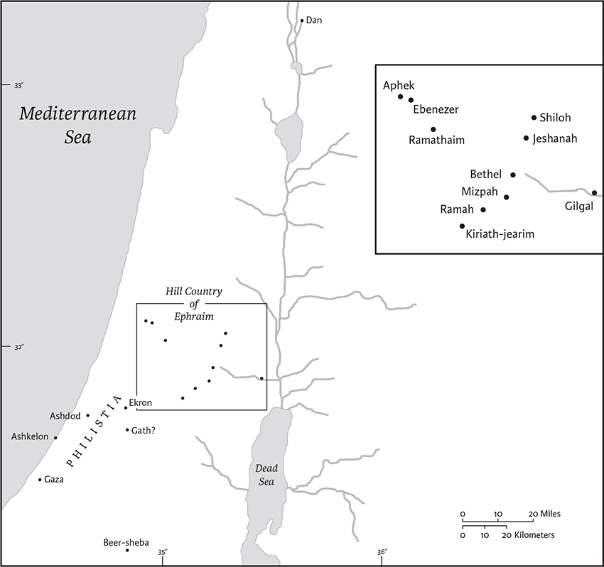
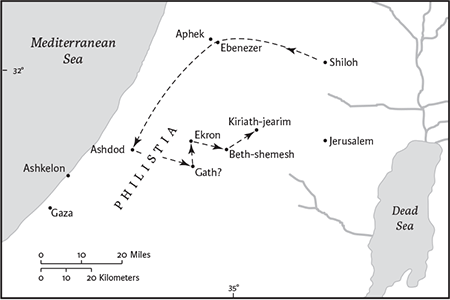
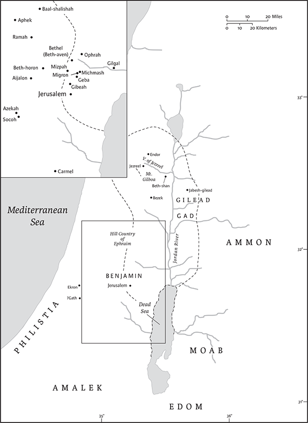
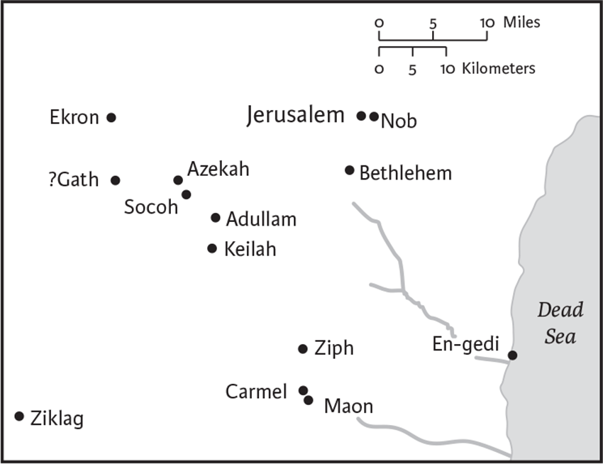

1 Samuel
1 Kingdoms in Greek
Name
First and Second Samuel were originally a single work named after the prophet Samuel, who is the focal character of the first eight chapters of 1 Samuel. The name is not entirely appropriate, however, since Samuel dies before 1 Samuel ends (25.1).
Location in Canon
The original, single book of Samuel was divided into two books in the Greek translation of the Hebrew Bible (the Septuagint, abbreviated LXX) and grouped together with the book of Kings (also divided in two) to form 1–4 Reigns or 1–4 Kingdoms. These divisions were later introduced into Hebrew Bibles and subsequently became standard. The books of Samuel are in the section of the Hebrew Bible known as the Former Prophets. The LXX and most Christian Bibles place 1 and 2 Samuel in the category of the Historical Books.
Authorship
In the Babylonian Talmud (b. B. Bat. 14b, ca. sixth century ce) the prophet Samuel is identified as the author of those parts of the book that treat events before his death, the rest being attributed to the prophets Nathan and Gad based on 1 Chr 29.29. Modern scholars consider 1 and 2 Samuel to have been written by several anonymous authors, and generally often view it as part of a larger composition called the Deuteronomistic History (DH). The Deuteronomistic History, encompassing the books of Joshua, Judges, 1 and 2 Samuel, and 1 and 2 Kings, prefaced by Deuteronomy, relates Israel’s history in the Promised Land, from the conquest under Joshua until the end of the kingdoms of Israel and Judah. The foundational work was written by a nameless author/editor known as the Deuteronomist, and it was later supplemented by various anonymous authors and editors.
Date and Context of Composition
The Deuteronomistic History was probably completed shortly after the Babylonian exile in 586 bce and sought to offer a theological reason for the demise of Israel and Judah. Some scholars posit an earlier edition that promoted King Josiah (640–609 bce) as a new David. Others argue for multiple preexilic, exilic, or postexilic editions.
Literary History
The Deuteronomist (Dtr) edited various traditions into a single, running historical account. In 1 Samuel some scholars have posited hypothetical source documents behind 4.1–7.1 (the “Ark Narrative,” possibly continued in 2 Sam 6), chs 8–15 (the “Saul Cycle”), and chs 16–31 (the “Story of David’s Rise”). The Dtr(s) also occasionally inserted speeches or commentary in their own distinctive Deuteronomistic style into the narrative; these include 1 Samuel 8.8 (the Exodus), 8.12 (the people crying out), and 12.14–15 (the review of Israel’s history and the command to “heed the voice of the Lord”).
Structure and Contents
First Samuel falls readily into three parts, each with a different central character: Samuel as a transitional figure—prophet, priest, and judge— between the judges and the monarchy (chs 1–7), the emergence of Saul as Israel’s first king (chs 8–15), and David’s ascent (chs 16–31). David is the main hero not only of 1 and 2 Samuel but of the Deuteronomistic History as well. The pro‐Davidic tone of 1 Samuel is evident in the contrast between Saul, who falters repeatedly, and David, who can do no wrong. God eventually abandons Saul but is constantly with David. God’s presence with David, first in Saul’s court and then while hiding from Saul, is a major theme in the book.
Interpretation
Perhaps the major issue for the interpretation of the book of Samuel (both 1 and 2) is the relationship of its account to history. There are at least three reasons for doubting that the book is a narrative of history. First, though its authors no doubt used sources, they wrote centuries after the events it describes. Second, it is a creative literary masterpiece by an “omniscient narrator” who reports private conversations and personal thoughts. It is full of wordplays, intricate plots with subtle twists, and portraits of complex characters. Characters are rarely described, so that descriptions are particularly noteworthy. More often, their inner qualities and motives are revealed by their actions or words, leaving room for ambiguity. Third, the tone or orientation of the book is apologetic or defensive throughout. It may even have been based in parts on an older apologetic work. The charge that David usurped the throne to which he had no hereditary right is addressed in 1 Samuel by the contention that David was the Lord’s anointed, who came to prominence as a result of divine choice rather than personal ambition. First Samuel thus presents David as the innocent victim of Saul’s jealousy, beloved by Israel’s public and leading citizens including Saul’s own children, and even by Saul at the beginning of their relationship, when David became a member of the royal family through marriage. Consideration of the apologetic “spin” of the book and the likely ulterior motives of the major characters, especially in cases where the narrative seems to “protest too much,” suggest that the historical reality was often quite different from the narrative tale. In the notes that follow the world imagined is that of the story rather than that of historical reality.
Steven L. McKenzie
1 There was a certain man of Ramathaim, a Zuphitea from the hill country of Ephraim, whose name was Elkanah son of Jeroham son of Elihu son of Tohu son of Zuph, an Ephraimite. 2He had two wives; the name of the one was Hannah, and the name of the other Peninnah. Peninnah had children, but Hannah had no children.
3Now this man used to go up year by year from his town to worship and to sacrifice to the Lord of hosts at Shiloh, where the two sons of Eli, Hophni and Phinehas, were priests of the Lord. 4On the day when Elkanah sacrificed, he would give portions to his wife Peninnah and to all her sons and daughters; 5but to Hannah he gave a double portion,b because he loved her, though the Lord had closed her womb. 6Her rival used to provoke her severely, to irritate her, because the Lord had closed her womb. 7So it went on year by year; as often as she went up to the house of the Lord, she used to provoke her. Therefore Hannah wept and would not eat. 8Her husband Elkanah said to her, “Hannah, why do you weep? Why do you not eat? Why is your heart sad? Am I not more to you than ten sons?”
9After they had eaten and drunk at Shiloh, Hannah rose and presented herself before the Lord.c Now Eli the priest was sitting on the seat beside the doorpost of the temple of the Lord. 10She was deeply distressed and prayed to the Lord, and wept bitterly. 11She made this vow:
“O Lord of hosts, if only you will look on the misery of your servant, and remember me, and not forget your servant, but will give to your servant a male child, then I will set him before you as a naziritea until the day of his death. He shall drink neither wine nor intoxicants,b and no razor shall touch his head.”
12As she continued praying before the Lord, Eli observed her mouth. 13Hannah was praying silently; only her lips moved, but her voice was not heard; therefore Eli thought she was drunk. 14So Eli said to her, “How long will you make a drunken spectacle of yourself? Put away your wine.” 15But Hannah answered, “No, my lord, I am a woman deeply troubled; I have drunk neither wine nor strong drink, but I have been pouring out my soul before the Lord. 16Do not regard your servant as a worthless woman, for I have been speaking out of my great anxiety and vexation all this time.” 17Then Eli answered, “Go in peace; the God of Israel grant the petition you have made to him.” 18And she said, “Let your servant find favor in your sight.” Then the woman went to her quarters,c ate and drank with her husband,d and her countenance was sad no longer.e
19They rose early in the morning and worshiped before the Lord; then they went back to their house at Ramah. Elkanah knew his wife Hannah, and the Lord remembered her. 20In due time Hannah conceived and bore a son. She named him Samuel, for she said, “I have asked him of the Lord.”
21The man Elkanah and all his household went up to offer to the Lord the yearly sacrifice, and to pay his vow. 22But Hannah did not go up, for she said to her husband, “As soon as the child is weaned, I will bring him, that he may appear in the presence of the Lord, and remain there forever; I will offer him as a naziritea for all time.”f 23Her husband Elkanah said to her, “Do what seems best to you, wait until you have weaned him; only—may the Lord establish his word.”g So the woman remained and nursed her son, until she weaned him. 24When she had weaned him, she took him up with her, along with a three‐year‐old bull,h an ephah of flour, and a skin of wine. She brought him to the house of the Lord at Shiloh; and the child was young. 25Then they slaughtered the bull, and they brought the child to Eli. 26And she said, “Oh, my lord! As you live, my lord, I am the woman who was standing here in your presence, praying to the Lord. 27For this child I prayed; and the Lord has granted me the petition that I made to him. 28Therefore I have lent him to the Lord; as long as he lives, he is given to the Lord.”
She left him there fori the Lord.
2 Hannah prayed and said,
“My heart exults in the Lord;
my strength is exalted in my God.j
My mouth derides my enemies,
because I rejoice in mya victory.
2“There is no Holy One like the Lord,
no one besides you;
there is no Rock like our God.
3Talk no more so very proudly,
let not arrogance come from your mouth;
for the Lord is a God of knowledge,
and by him actions are weighed.
4The bows of the mighty are broken,
but the feeble gird on strength.
5Those who were full have hired themselves out for bread,
but those who were hungry are fat with spoil.
The barren has borne seven,
but she who has many children is forlorn.
6The Lord kills and brings to life;
he brings down to Sheol and raises up.
7The Lord makes poor and makes rich;
he brings low, he also exalts.
8He raises up the poor from the dust;
he lifts the needy from the ash heap,
to make them sit with princes
and inherit a seat of honor.b
For the pillars of the earth are the Lord’s,
and on them he has set the world.
9“He will guard the feet of his faithful ones,
but the wicked shall be cut off in darkness;
for not by might does one prevail.
10The Lord! His adversaries shall be shattered;
the Most Highc will thunder in heaven.
The Lord will judge the ends of the earth;
he will give strength to his king,
and exalt the power of his anointed.”
11Then Elkanah went home to Ramah, while the boy remained to minister to the Lord, in the presence of the priest Eli.
12Now the sons of Eli were scoundrels; they had no regard for the Lord 13or for the duties of the priests to the people. When anyone offered sacrifice, the priest’s servant would come, while the meat was boiling, with a three‐pronged fork in his hand, 14and he would thrust it into the pan, or kettle, or caldron, or pot; all that the fork brought up the priest would take for himself.d This is what they did at Shiloh to all the Israelites who came there. 15Moreover, before the fat was burned, the priest’s servant would come and say to the one who was sacrificing, “Give meat for the priest to roast; for he will not accept boiled meat from you, but only raw.” 16And if the man said to him, “Let them burn the fat first, and then take whatever you wish,” he would say, “No, you must give it now; if not, I will take it by force.” 17Thus the sin of the young men was very great in the sight of the Lord; for they treated the offerings of the Lord with contempt.

Chs 1‐6: The activity of Samuel.
18Samuel was ministering before the Lord, a boy wearing a linen ephod. 19His mother used to make for him a little robe and take it to him each year, when she went up with her husband to offer the yearly sacrifice. 20Then Eli would bless Elkanah and his wife, and say, “May the Lord repaya you with children by this woman for the gift that she made tob the Lord”; and then they would return to their home.
21Andc the Lord took note of Hannah; she conceived and bore three sons and two daughters. And the boy Samuel grew up in the presence of the Lord.
22Now Eli was very old. He heard all that his sons were doing to all Israel, and how they lay with the women who served at the entrance to the tent of meeting. 23He said to them, “Why do you do such things? For I hear of your evil dealings from all these people. 24No, my sons; it is not a good report that I hear the people of the Lord spreading abroad. 25If one person sins against another, someone can intercede for the sinner with the Lord;a but if someone sins against the Lord, who can make intercession?” But they would not listen to the voice of their father; for it was the will of the Lord to kill them.
26Now the boy Samuel continued to grow both in stature and in favor with the Lord and with the people.
27A man of God came to Eli and said to him, “Thus the Lord has said, ‘I revealedb myself to the family of your ancestor in Egypt when they were slavesc to the house of Pharaoh. 28I chose him out of all the tribes of Israel to be my priest, to go up to my altar, to offer incense, to wear an ephod before me; and I gave to the family of your ancestor all my offerings by fire from the people of Israel. 29Why then look with greedy eyed at my sacrifices and my offerings that I commanded, and honor your sons more than me by fattening yourselves on the choicest parts of every offering of my people Israel?’ 30Therefore the Lord the God of Israel declares: ‘I promised that your family and the family of your ancestor should go in and out before me forever’; but now the Lord declares: ‘Far be it from me; for those who honor me I will honor, and those who despise me shall be treated with contempt. 31See, a time is coming when I will cut off your strength and the strength of your ancestor’s family, so that no one in your family will live to old age. 32Then in distress you will look with greedy eyee on all the prosperity that shall be bestowed upon Israel; and no one in your family shall ever live to old age. 33The only one of you whom I shall not cut off from my altar shall be spared to weep out hisf eyes and grieve hisg heart; all the members of your household shall die by the sword.h 34The fate of your two sons, Hophni and Phinehas, shall be the sign to you—both of them shall die on the same day. 35I will raise up for myself a faithful priest, who shall do according to what is in my heart and in my mind. I will build him a sure house, and he shall go in and out before my anointed one forever. 36Everyone who is left in your family shall come to implore him for a piece of silver or a loaf of bread, and shall say, Please put me in one of the priest’s places, that I may eat a morsel of bread.’”
3 Now the boy Samuel was ministering to the Lord under Eli. The word of the Lord was rare in those days; visions were not widespread.
2At that time Eli, whose eyesight had begun to grow dim so that he could not see, was lying down in his room; 3the lamp of God had not yet gone out, and Samuel was lying down in the temple of the Lord, where the ark of God was. 4Then the Lord called, “Samuel! Samuel!”a and he said, “Here I am!” 5and ran to Eli, and said, “Here I am, for you called me.” But he said, “I did not call; lie down again.” So he went and lay down. 6The Lord called again, “Samuel!” Samuel got up and went to Eli, and said, “Here I am, for you called me.” But he said, “I did not call, my son; lie down again.” 7Now Samuel did not yet know the Lord, and the word of the Lord had not yet been revealed to him. 8The Lord called Samuel again, a third time. And he got up and went to Eli, and said, “Here I am, for you called me.” Then Eli perceived that the Lord was calling the boy. 9Therefore Eli said to Samuel, “Go, lie down; and if he calls you, you shall say, ‘Speak, Lord, for your servant is listening.’” So Samuel went and lay down in his place.
10Now the Lord came and stood there, calling as before, “Samuel! Samuel!” And Samuel said, “Speak, for your servant is listening.” 11Then the Lord said to Samuel, “See, I am about to do something in Israel that will make both ears of anyone who hears of it tingle. 12On that day I will fulfill against Eli all that I have spoken concerning his house, from beginning to end. 13For I have told him that I am about to punish his house forever, for the iniquity that he knew, because his sons were blaspheming God,b and he did not restrain them. 14Therefore I swear to the house of Eli that the iniquity of Eli’s house shall not be expiated by sacrifice or offering forever.”
15Samuel lay there until morning; then he opened the doors of the house of the Lord. Samuel was afraid to tell the vision to Eli. 16But Eli called Samuel and said, “Samuel, my son.” He said, “Here I am.” 17Eli said, “What was it that he told you? Do not hide it from me. May God do so to you and more also, if you hide anything from me of all that he told you.” 18So Samuel told him everything and hid nothing from him. Then he said, “It is the Lord; let him do what seems good to him.”
19As Samuel grew up, the Lord was with him and let none of his words fall to the ground. 20And all Israel from Dan to Beersheba knew that Samuel was a trustworthy prophet of the Lord. 21The Lord continued to appear at Shiloh, for the Lord revealed himself to Samuel at Shiloh by the word of the Lord.
41And the word of Samuel came to all Israel.
In those days the Philistines mustered for war against Israel,c and Israel went out to battle against them;a they encamped at Ebenezer, and the Philistines encamped at Aphek. 2The Philistines drew up in line against Israel, and when the battle was joined,b Israel was defeated by the Philistines, who killed about four thousand men on the field of battle. 3When the troops came to the camp, the elders of Israel said, “Why has the Lord put us to rout today before the Philistines? Let us bring the ark of the covenant of the Lord here from Shiloh, so that he may come among us and save us from the power of our enemies.” 4So the people sent to Shiloh, and brought from there the ark of the covenant of the Lord of hosts, who is enthroned on the cherubim. The two sons of Eli, Hophni and Phinehas, were there with the ark of the covenant of God.

Chs 4–6: Wanderings of the Ark of the Covenant.
5When the ark of the covenant of the Lord came into the camp, all Israel gave a mighty shout, so that the earth resounded. 6When the Philistines heard the noise of the shouting, they said, “What does this great shouting in the camp of the Hebrews mean?” When they learned that the ark of the Lord had come to the camp, 7the Philistines were afraid; for they said, “Gods havec come into the camp.” They also said, “Woe to us! For nothing like this has happened before. 8Woe to us! Who can deliver us from the power of these mighty gods? These are the gods who struck the Egyptians with every sort of plague in the wilderness. 9Take courage, and be men, O Philistines, in order not to become slaves to the Hebrews as they have been to you; be men and fight.”
10So the Philistines fought; Israel was defeated, and they fled, everyone to his home. There was a very great slaughter, for there fell of Israel thirty thousand foot soldiers. 11The ark of God was captured; and the two sons of Eli, Hophni and Phinehas, died.
12A man of Benjamin ran from the battle line, and came to Shiloh the same day, with his clothes torn and with earth upon his head. 13When he arrived, Eli was sitting upon his seat by the road watching, for his heart trembled for the ark of God. When the man came into the city and told the news, all the city cried out. 14When Eli heard the sound of the outcry, he said, “What is this uproar?” Then the man came quickly and told Eli. 15Now Eli was ninety‐eight years old and his eyes were set, so that he could not see. 16The man said to Eli, “I have just come from the battle; I fled from the battle today.” He said, “How did it go, my son?” 17The messenger replied, “Israel has fled before the Philistines, and there has also been a great slaughter among the troops; your two sons also, Hophni and Phinehas, are dead, and the ark of God has been captured.” 18When he mentioned the ark of God, Elia fell over backward from his seat by the side of the gate; and his neck was broken and he died, for he was an old man, and heavy. He had judged Israel forty years.
19Now his daughter‐in‐law, the wife of Phinehas, was pregnant, about to give birth. When she heard the news that the ark of God was captured, and that her father‐in‐law and her husband were dead, she bowed and gave birth; for her labor pains overwhelmed her. 20As she was about to die, the women attending her said to her, “Do not be afraid, for you have borne a son.” But she did not answer or give heed. 21She named the child Ichabod, meaning, “The glory has departed from Israel,” because the ark of God had been captured and because of her father‐in‐law and her husband. 22She said, “The glory has departed from Israel, for the ark of God has been captured.”
5 When the Philistines captured the ark of God, they brought it from Ebenezer to Ashdod; 2then the Philistines took the ark of God and brought it into the house of Dagon and placed it beside Dagon. 3When the people of Ashdod rose early the next day, there was Dagon, fallen on his face to the ground before the ark of the Lord. So they took Dagon and put him back in his place. 4But when they rose early on the next morning, Dagon had fallen on his face to the ground before the ark of the Lord, and the head of Dagon and both his hands were lying cut off upon the threshold; only the trunk of b Dagon was left to him. 5This is why the priests of Dagon and all who enter the house of Dagon do not step on the threshold of Dagon in Ashdod to this day.
6The hand of the Lord was heavy upon the people of Ashdod, and he terrified and struck them with tumors, both in Ashdod and in its territory. 7And when the inhabitants of Ashdod saw how things were, they said, “The ark of the God of Israel must not remain with us; for his hand is heavy on us and on our god Dagon.” 8So they sent and gathered together all the lords of the Philistines, and said, “What shall we do with the ark of the God of Israel?” The inhabitants of Gath replied, “Let the ark of God be moved on to us.”c So they moved the ark of the God of Israel to Gath.d 9But after they had brought it to Gath,e the hand of the Lord was against the city, causing a very great panic; he struck the inhabitants of the city, both young and old, so that tumors broke out on them. 10So they sent the ark of the God of Israelf to Ekron. But when the ark of God came to Ekron, the people of Ekron cried out, “Whyg have they brought around to ush the ark of the God of Israel to kill usa and ourb people?” 11They sent therefore and gathered together all the lords of the Philistines, and said, “Send away the ark of the God of Israel, and let it return to its own place, that it may not kill us and our people.” For there was a deathly panicc throughout the whole city. The hand of God was very heavy there; 12those who did not die were stricken with tumors, and the cry of the city went up to heaven.
6 The ark of the Lord was in the country of the Philistines seven months. 2Then Philistines called for the priests and the diviners and said, “What shall we do with the ark of the Lord? Tell us what we should send with it to its place.” 3They said, “If you send away the ark of the God of Israel, do not send it empty, but by all means return him a guilt offering. Then you will be healed and will be ransomed;d will not his hand then turn from you?” 4And they said, “What is the guilt offering that we shall return to him?” They answered, “Five gold tumors and five gold mice, according to the number of the lords of the Philistines; for the same plague was upon all of you and upon your lords. 5So you must make images of your tumors and images of your mice that ravage the land, and give glory to the God of Israel; perhaps he will lighten his hand on you and your gods and your land. 6Why should you harden your hearts as the Egyptians and Pharaoh hardened their hearts? After he had made fools of them, did they not let the people go, and they departed? 7Now then, get ready a new cart and two milch cows that have never borne a yoke, and yoke the cows to the cart, but take their calves home, away from them. 8Take the ark of the Lord and place it on the cart, and put in a box at its side the figures of gold, which you are returning to him as a guilt offering. Then send it off, and let it go its way. 9And watch; if it goes up on the way to its own land, to Beth‐shemesh, then it is he who has done us this great harm; but if not, then we shall know that it is not his hand that struck us; it happened to us by chance.”
10The men did so; they took two milch cows and yoked them to the cart, and shut up their calves at home. 11They put the ark of the Lord on the cart, and the box with the gold mice and the images of their tumors. 12The cows went straight in the direction of Beth‐shemesh along one highway, lowing as they went; they turned neither to the right nor to the left, and the lords of the Philistines went after them as far as the border of Beth‐shemesh.
13Now the people of Beth‐shemesh were reaping their wheat harvest in the valley. When they looked up and saw the ark, they went with rejoicing to meet it.e 14The cart came into the field of Joshua of Bethshemesh, and stopped there. A large stone was there; so they split up the wood of the cart and offered the cows as a burnt offering to the Lord. 15The Levites took down the ark of the Lord and the box that was beside it, in which were the gold objects, and set them upon the large stone. Then the people of Beth‐shemesh offered burnt offerings and presented sacrifices on that day to the Lord. 16When the five lords of the Philistines saw it, they returned that day to Ekron.
17These are the gold tumors, which the Philistines returned as a guilt offering to the Lord: one for Ashdod, one for Gaza, one for Ashkelon, one for Gath, one for Ekron; 18also the gold mice, according to the number of all the cities of the Philistines belonging to the five lords, both fortified cities and unwalled villages. The great stone, beside which they set down the ark of the Lord, is a witness to this day in the field of Joshua of Beth‐shemesh.
19The descendants of Jeconiah did not rejoice with the people of Beth‐shemesh when they greeteda the ark of the Lord; and he killed seventy men of them.b The people mourned because the Lord had made a great slaughter among the people. 20Then the people of Beth‐shemesh said, “Who is able to stand before the Lord, this holy God? To whom shall he go so that we may be rid of him?” 21So they sent messengers to the inhabitants of Kiriath‐jearim, saying, “The Philistines have returned the ark of the Lord.
7 Come down and take it up to you.” 1And the people of Kiriath‐jearim came and took up the ark of the Lord, and brought it to the house of Abinadab on the hill. They consecrated his son, Eleazar, to have charge of the ark of the Lord.
2From the day that the ark was lodged at Kiriath‐jearim, a long time passed, some twenty years, and all the house of Israel lamentedc after the Lord.
3Then Samuel said to all the house of Israel, “If you are returning to the Lord with all your heart, then put away the foreign gods and the Astartes from among you. Direct your heart to the Lord, and serve him only, and he will deliver you out of the hand of the Philistines.” 4So Israel put away the Baals and the Astartes, and they served the Lord only.
5Then Samuel said, “Gather all Israel at Mizpah, and I will pray to the Lord for you.” 6So they gathered at Mizpah, and drew water and poured it out before the Lord. They fasted that day, and said, “We have sinned against the Lord.” And Samuel judged the people of Israel at Mizpah.
7When the Philistines heard that the people of Israel had gathered at Mizpah, the lords of the Philistines went up against Israel. And when the people of Israel heard of it they were afraid of the Philistines. 8The people of Israel said to Samuel, “Do not cease to cry out to the Lord our God for us, and pray that he may save us from the hand of the Philistines.” 9So Samuel took a sucking lamb and offered it as a whole burnt offering to the Lord; Samuel cried out to the Lord for Israel, and the Lord answered him. 10As Samuel was offering up the burnt offering, the Philistines drew near to attack Israel; but the Lord thundered with a mighty voice that day against the Philistines and threw them into confusion; and they were routed before Israel. 11And the men of Israel went out of Mizpah and pursued the Philistines, and struck them down as far as beyond Beth‐car.
12Then Samuel took a stone and set it up between Mizpah and Jeshanah,a and named it Ebenezer;b for he said, “Thus far the Lord has helped us.” 13So the Philistines were subdued and did not again enter the territory of Israel; the hand of the Lord was against the Philistines all the days of Samuel. 14The towns that the Philistines had taken from Israel were restored to Israel, from Ekron to Gath; and Israel recovered their territory from the hand of the Philistines. There was peace also between Israel and the Amorites.
15Samuel judged Israel all the days of his life. 16He went on a circuit year by year to Bethel, Gilgal, and Mizpah; and he judged Israel in all these places. 17Then he would come back to Ramah, for his home was there; he administered justice there to Israel, and built there an altar to the Lord.
8 When Samuel became old, he made his sons judges over Israel. 2The name of his firstborn son was Joel, and the name of his second, Abijah; they were judges in Beersheba. 3Yet his sons did not follow in his ways, but turned aside after gain; they took bribes and perverted justice.
4Then all the elders of Israel gathered together and came to Samuel at Ramah, 5and said to him, “You are old and your sons do not follow in your ways; appoint for us, then, a king to govern us, like other nations.” 6But the thing displeased Samuel when they said, “Give us a king to govern us.” Samuel prayed to the Lord, 7and the Lord said to Samuel, “Listen to the voice of the people in all that they say to you; for they have not rejected you, but they have rejected me from being king over them. 8Just as they have done to me,c from the day I brought them up out of Egypt to this day, forsaking me and serving other gods, so also they are doing to you. 9Now then, listen to their voice; only—you shall solemnly warn them, and show them the ways of the king who shall reign over them.”

The kingdom of Saul according to the book of Samuel. The dashed line shows the approximate outer boundary of his kingdom.
10So Samuel reported all the words of the Lord to the people who were asking him for a king. 11He said, “These will be the ways of the king who will reign over you: he will take your sons and appoint them to his chariots and to be his horsemen, and to run before his chariots; 12and he will appoint for himself commanders of thousands and commanders of fifties, and some to plow his ground and to reap his harvest, and to make his implements of war and the equipment of his chariots. 13He will take your daughters to be perfumers and cooks and bakers. 14He will take the best of your fields and vineyards and olive orchards and give them to his courtiers. 15He will take one‐tenth of your grain and of your vineyards and give it to his officers and his courtiers. 16He will take your male and female slaves, and the best of your cattlea and donkeys, and put them to his work. 17He will take one‐tenth of your flocks, and you shall be his slaves. 18And in that day you will cry out because of your king, whom you have chosen for yourselves; but the Lord will not answer you in that day.”
19But the people refused to listen to the voice of Samuel; they said, “No! but we are determined to have a king over us, 20so that we also may be like other nations, and that our king may govern us and go out before us and fight our battles.” 21When Samuel had heard all the words of the people, he repeated them in the ears of the Lord. 22The Lord said to Samuel, “Listen to their voice and set a king over them.” Samuel then said to the people of Israel, “Each of you return home.”
9 There was a man of Benjamin whose name was Kish son of Abiel son of Zeror son of Becorath son of Aphiah, a Benjaminite, a man of wealth. 2He had a son whose name was Saul, a handsome young man. There was not a man among the people of Israel more handsome than he; he stood head and shoulders above everyone else.
3Now the donkeys of Kish, Saul’s father, had strayed. So Kish said to his son Saul, “Take one of the boys with you; go and look for the donkeys.” 4He passed through the hill country of Ephraim and passed through the land of Shalishah, but they did not find them. And they passed through the land of Shaalim, but they were not there. Then he passed through the land of Benjamin, but they did not find them.
5When they came to the land of Zuph, Saul said to the boy who was with him, “Let us turn back, or my father will stop worrying about the donkeys and worry about us.” 6But he said to him, “There is a man of God in this town; he is a man held in honor. Whatever he says always comes true. Let us go there now; perhaps he will tell us about the journey on which we have set out.” 7Then Saul replied to the boy, “But if we go, what can we bring the man? For the bread in our sacks is gone, and there is no present to bring to the man of God. What have we?” 8The boy answered Saul again, “Here, I have with me a quarter shekel of silver; I will give it to the man of God, to tell us our way.” 9(Formerly in Israel, anyone who went to inquire of God would say, “Come, let us go to the seer”; for the one who is now called a prophet was formerly called a seer.) 10Saul said to the boy, “Good; come, let us go.” So they went to the town where the man of God was.
11As they went up the hill to the town, they met some girls coming out to draw water, and said to them, “Is the seer here?” 12They answered, “Yes, there he is just ahead of you. Hurry; he has come just now to the town, because the people have a sacrifice today at the shrine. 13As soon as you enter the town, you will find him, before he goes up to the shrine to eat. For the people will not eat until he comes, since he must bless the sacrifice; afterward those eat who are invited. Now go up, for you will meet him immediately.” 14So they went up to the town. As they were entering the town, they saw Samuel coming out toward them on his way up to the shrine.
15Now the day before Saul came, the Lord had revealed to Samuel: 16“Tomorrow about this time I will send to you a man from the land of Benjamin, and you shall anoint him to be ruler over my people Israel. He shall save my people from the hand of the Philistines; for I have seen the suffering of a my people, because their outcry has come to me.” 17When Samuel saw Saul, the Lord told him, “Here is the man of whom I spoke to you. He it is who shall rule over my people.” 18Then Saul approached Samuel inside the gate, and said, “Tell me, please, where is the house of the seer?” 19Samuel answered Saul, “I am the seer; go up before me to the shrine, for today you shall eat with me, and in the morning I will let you go and will tell you all that is on your mind. 20As for your donkeys that were lost three days ago, give no further thought to them, for they have been found. And on whom is all Israel’s desire fixed, if not on you and on all your ancestral house?” 21Saul answered, “I am only a Benjaminite, from the least of the tribes of Israel, and my family is the humblest of all the families of the tribe of Benjamin. Why then have you spoken to me in this way?”
22Then Samuel took Saul and his servantboy and brought them into the hall, and gave them a place at the head of those who had been invited, of whom there were about thirty. 23And Samuel said to the cook, “Bring the portion I gave you, the one I asked you to put aside.” 24The cook took up the thigh and what went with itb and set them before Saul. Samuel said, “See, what was kept is set before you. Eat; for it is setc before you at the appointed time, so that you might eat with the guests.”d
So Saul ate with Samuel that day. 25When they came down from the shrine into the town, a bed was spread for Saula on the roof, and he lay down to sleep.b 26Then at the break of dawnc Samuel called to Saul upon the roof, “Get up, so that I may send you on your way.” Saul got up, and both he and Samuel went out into the street.
27As they were going down to the outskirts of the town, Samuel said to Saul, “Tell the boy to go on before us, and when he has passed on, stop here yourself for a while, that I may make known to you the word of God.”
101Samuel took a vial of oil and poured it on his head, and kissed him; he said, “The Lord has anointed you ruler over his people Israel. You shall reign over the people of the Lord and you will save them from the hand of their enemies all around. Now this shall be the sign to you that the Lord has anointed you rulerd over his heritage: 2When you depart from me today you will meet two men by Rachel’s tomb in the territory of Benjamin at Zelzah; they will say to you, ‘The donkeys that you went to seek are found, and now your father has stopped worrying about them and is worrying about you, saying: What shall I do about my son?’ 3Then you shall go on from there further and come to the oak of Tabor; three men going up to God at Bethel will meet you there, one carrying three kids, another carrying three loaves of bread, and another carrying a skin of wine. 4They will greet you and give you two loaves of bread, which you shall accept from them. 5After that you shall come to Gibeathelohim,e at the place where the Philistine garrison is; there, as you come to the town, you will meet a band of prophets coming down from the shrine with harp, tambourine, flute, and lyre playing in front of them; they will be in a prophetic frenzy. 6Then the spirit of the Lord will possess you, and you will be in a prophetic frenzy along with them and be turned into a different person. 7Now when these signs meet you, do whatever you see fit to do, for God is with you. 8And you shall go down to Gilgal ahead of me; then I will come down to you to present burnt offerings and offer sacrifices of well‐being. Seven days you shall wait, until I come to you and show you what you shall do.”
9As he turned away to leave Samuel, God gave him another heart; and all these signs were fulfilled that day. 10When they were going from theref to Gibeah,g a band of prophets met him; and the spirit of God possessed him, and he fell into a prophetic frenzy along with them. 11When all who knew him before saw how he prophesied with the prophets, the people said to one another, “What has come over the son of Kish? Is Saul also among the prophets?” 12A man of the place answered, “And who is their father?” Therefore it became a proverb, “Is Saul also among the prophets?” 13When his prophetic frenzy had ended, he went home.a
14Saul’s uncle said to him and to the boy, “Where did you go?” And he replied, “To seek the donkeys; and when we saw they were not to be found, we went to Samuel.” 15Saul’s uncle said, “Tell me what Samuel said to you.” 16Saul said to his uncle, “He told us that the donkeys had been found.” But about the matter of the kingship, of which Samuel had spoken, he did not tell him anything.
17Samuel summoned the people to the Lord at Mizpah 18and said to them,b “Thus says the Lord, the God of Israel, ‘I brought up Israel out of Egypt, and I rescued you from the hand of the Egyptians and from the hand of all the kingdoms that were oppressing you.’ 19But today you have rejected your God, who saves you from all your calamities and your distresses; and you have said, ‘No! but set a king over us.’ Now therefore present yourselves before the Lord by your tribes and by your clans.”
20Then Samuel brought all the tribes of Israel near, and the tribe of Benjamin was taken by lot. 21He brought the tribe of Benjamin near by its families, and the family of the Matrites was taken by lot. Finally he brought the family of the Matrites near man by man,c and Saul the son of Kish was taken by lot. But when they sought him, he could not be found. 22So they inquired again of the Lord, “Did the man come here?”d and the Lord said, “See, he has hidden himself among the baggage.” 23Then they ran and brought him from there. When he took his stand among the people, he was head and shoulders taller than any of them. 24Samuel said to all the people, “Do you see the one whom the Lord has chosen? There is no one like him among all the people.” And all the people shouted, “Long live the king!”
25Samuel told the people the rights and duties of the kingship; and he wrote them in a book and laid it up before the Lord. Then Samuel sent all the people back to their homes. 26Saul also went to his home at Gibeah, and with him went warriors whose hearts God had touched. 27But some worthless fellows said, “How can this man save us?” They despised him and brought him no present. But he held his peace.
Now Nahash, king of the Ammonites, had been grievously oppressing the Gadites and the Reubenites. He would gouge out the right eye of each of them and would not grant Israel a deliverer. No one was left of the Israelites across the Jordan whose right eye Nahash, king of the Ammonites, had not gouged out. But there were seven thousand men who had escaped from the Ammonites and had entered Jabesh‐gilead.a
11 About a month later,b Nahash the Ammonite went up and besieged Jabesh‐gilead; and all the men of Jabesh said to Nahash, “Make a treaty with us, and we will serve you.” 2But Nahash the Ammonite said to them, “On this condition I will make a treaty with you, namely that I gouge out everyone’s right eye, and thus put disgrace upon all Israel.” 3The elders of Jabesh said to him, “Give us seven days’ respite that we may send messengers through all the territory of Israel. Then, if there is no one to save us, we will give ourselves up to you.” 4When the messengers came to Gibeah of Saul, they reported the matter in the hearing of the people; and all the people wept aloud.
5Now Saul was coming from the field behind the oxen; and Saul said, “What is the matter with the people, that they are weeping?” So they told him the message from the inhabitants of Jabesh. 6And the spirit of God came upon Saul in power when he heard these words, and his anger was greatly kindled. 7He took a yoke of oxen, and cut them in pieces and sent them throughout all the territory of Israel by messengers, saying, “Whoever does not come out after Saul and Samuel, so shall it be done to his oxen!” Then the dread of the Lord fell upon the people, and they came out as one. 8When he mustered them at Bezek, those from Israel were three hundred thousand, and those from Judah seventyc thousand. 9They said to the messengers who had come, “Thus shall you say to the inhabitants of Jabesh‐gilead: ‘Tomorrow, by the time the sun is hot, you shall have deliverance.’” When the messengers came and told the inhabitants of Jabesh, they rejoiced. 10So the inhabitants of Jabesh said, “Tomorrow we will give ourselves up to you, and you may do to us whatever seems good to you.” 11The next day Saul put the people in three companies. At the morning watch they came into the camp and cut down the Ammonites until the heat of the day; and those who survived were scattered, so that no two of them were left together.
12The people said to Samuel, “Who is it that said, ‘Shall Saul reign over us?’ Give them to us so that we may put them to death.” 13But Saul said, “No one shall be put to death this day, for today the Lord has brought deliverance to Israel.”
14Samuel said to the people, “Come, let us go to Gilgal and there renew the kingship.” 15So all the people went to Gilgal, and there they made Saul king before the Lord in Gilgal. There they sacrificed offerings of wellbeing before the Lord, and there Saul and all the Israelites rejoiced greatly.
12 Samuel said to all Israel, “I have listened to you in all that you have said to me, and have set a king over you. 2See, it is the king who leads you now; I am old and gray, but my sons are with you. I have led you from my youth until this day. 3Here I am; testify against me before the Lord and before his anointed. Whose ox have I taken? Or whose donkey have I taken? Or whom have I defrauded? Whom have I oppressed? Or from whose hand have I taken a bribe to blind my eyes with it? Testify against mea and I will restore it to you.” 4They said, “You have not defrauded us or oppressed us or taken anything from the hand of anyone.” 5He said to them, “The Lord is witness against you, and his anointed is witness this day, that you have not found anything in my hand.” And they said, “He is witness.”
6Samuel said to the people, “The Lord is witness, whob appointed Moses and Aaron and brought your ancestors up out of the land of Egypt. 7Now therefore take your stand, so that I may enter into judgment with you before the Lord, and I will declare to youc all the saving deeds of the Lord that he performed for you and for your ancestors. 8When Jacob went into Egypt and the Egyptians oppressed them,d then your ancestors cried to the Lord and the Lord sent Moses and Aaron, who brought forth your ancestors out of Egypt, and settled them in this place. 9But they forgot the Lord their God; and he sold them into the hand of Sisera, commander of the army of King Jabin of e Hazor, and into the hand of the Philistines, and into the hand of the king of Moab; and they fought against them. 10Then they cried to the Lord, and said, ‘We have sinned, because we have forsaken the Lord, and have served the Baals and the Astartes; but now rescue us out of the hand of our enemies, and we will serve you.’ 11And the Lord sent Jerubbaal and Barak,f and Jephthah, and Samson,g and rescued you out of the hand of your enemies on every side; and you lived in safety. 12But when you saw that King Nahash of the Ammonites came against you, you said to me, ‘No, but a king shall reign over us,’ though the Lord your God was your king. 13See, here is the king whom you have chosen, for whom you have asked; see, the Lord has set a king over you. 14If you will fear the Lord and serve him and heed his voice and not rebel against the commandment of the Lord, and if both you and the king who reigns over you will follow the Lord your God, it will be well; 15but if you will not heed the voice of the Lord, but rebel against the commandment of the Lord, then the hand of the Lord will be against you and your king.a 16Now therefore take your stand and see this great thing that the Lord will do before your eyes. 17Is it not the wheat harvest today? I will call upon the Lord, that he may send thunder and rain; and you shall know and see that the wickedness that you have done in the sight of the Lord is great in demanding a king for yourselves.” 18So Samuel called upon the Lord, and the Lord sent thunder and rain that day; and all the people greatly feared the Lord and Samuel.
19All the people said to Samuel, “Pray to the Lord your God for your servants, so that we may not die; for we have added to all our sins the evil of demanding a king for ourselves.” 20And Samuel said to the people, “Do not be afraid; you have done all this evil, yet do not turn aside from following the Lord, but serve the Lord with all your heart; 21and do not turn aside after useless things that cannot profit or save, for they are useless. 22For the Lord will not cast away his people, for his great name’s sake, because it has pleased the Lord to make you a people for himself. 23Moreover as for me, far be it from me that I should sin against the Lord by ceasing to pray for you; and I will instruct you in the good and the right way. 24Only fear the Lord, and serve him faithfully with all your heart; for consider what great things he has done for you. 25But if you still do wickedly, you shall be swept away, both you and your king.”
13 Saul was . . .b years old when he began to reign; and he reigned . . . and twoc years over Israel.
2Saul chose three thousand out of Israel; two thousand were with Saul in Michmash and the hill country of Bethel, and a thousand were with Jonathan in Gibeah of Benjamin; the rest of the people he sent home to their tents. 3Jonathan defeated the garrison of the Philistines that was at Geba; and the Philistines heard of it. And Saul blew the trumpet throughout all the land, saying, “Let the Hebrews hear!” 4When all Israel heard that Saul had defeated the garrison of the Philistines, and also that Israel had become odious to the Philistines, the people were called out to join Saul at Gilgal.
5The Philistines mustered to fight with Israel, thirty thousand chariots, and six thousand horsemen, and troops like the sand on the seashore in multitude; they came up and encamped at Michmash, to the east of Beth‐aven. 6When the Israelites saw that they were in distress (for the troops were hard pressed), the people hid themselves in caves and in holes and in rocks and in tombs and in cisterns. 7Some Hebrews crossed the Jordan to the land of Gad and Gilead. Saul was still at Gilgal, and all the people followed him trembling.
8He waited seven days, the time appointed by Samuel; but Samuel did not come to Gilgal, and the people began to slip away from Saul.a 9So Saul said, “Bring the burnt offering here to me, and the offerings of well‐being.” And he offered the burnt offering. 10As soon as he had finished offering the burnt offering, Samuel arrived; and Saul went out to meet him and salute him. 11Samuel said, “What have you done?” Saul replied, “When I saw that the people were slipping away from me, and that you did not come within the days appointed, and that the Philistines were mustering at Michmash, 12I said, ‘Now the Philistines will come down upon me at Gilgal, and I have not entreated the favor of the Lord’; so I forced myself, and offered the burnt offering.” 13Samuel said to Saul, “You have done foolishly; you have not kept the commandment of the Lord your God, which he commanded you. The Lord would have established your kingdom over Israel forever, 14but now your kingdom will not continue; the Lord has sought out a man after his own heart; and the Lord has appointed him to be ruler over his people, because you have not kept what the Lord commanded you.” 15And Samuel left and went on his way from Gilgal.b The rest of the people followed Saul to join the army; they went up from Gilgal toward Gibeah of Benjamin.c
Saul counted the people who were present with him, about six hundred men. 16Saul, his son Jonathan, and the people who were present with them stayed in Geba of Benjamin; but the Philistines encamped at Michmash. 17And raiders came out of the camp of the Philistines in three companies; one company turned toward Ophrah, to the land of Shual, 18another company turned toward Bethhoron, and another company turned toward the mountaind that looks down upon the valley of Zeboim toward the wilderness.
19Now there was no smith to be found throughout all the land of Israel; for the Philistines said, “The Hebrews must not make swords or spears for themselves”; 20so all the Israelites went down to the Philistines to sharpen their plowshares, mattocks, axes, or sickles;e 21The charge was two‐thirds of a shekelf for the plowshares and for the mattocks, and one‐third of a shekel for sharpening the axes and for setting the goads.g 22So on the day of the battle neither sword nor spear was to be found in the possession of any of the people with Saul and Jonathan; but Saul and his son Jonathan had them.
23Now a garrison of the Philistines had gone out to the pass of Michmash.
141One day Jonathan son of Saul said to the young man who carried his armor, “Come, let us go over to the Philistine garrison on the other side.” But he did not tell his father. 2Saul was staying in the outskirts of Gibeah under the pomegranate tree that is at Migron; the troops that were with him were about six hundred men, 3along with Ahijah son of Ahitub, Ichabod’s brother, son of Phinehas son of Eli, the priest of the Lord in Shiloh, carrying an ephod. Now the people did not know that Jonathan had gone. 4In the pass,a by which Jonathan tried to go over to the Philistine garrison, there was a rocky crag on one side and a rocky crag on the other; the name of the one was Bozez, and the name of the other Seneh. 5One crag rose on the north in front of Michmash, and the other on the south in front of Geba.
6Jonathan said to the young man who carried his armor, “Come, let us go over to the garrison of these uncircumcised; it may be that the Lord will act for us; for nothing can hinder the Lord from saving by many or by few.” 7His armor‐bearer said to him, “Do all that your mind inclines to.b I am with you; as your mind is, so is mine.”c 8Then Jonathan said, “Now we will cross over to those men and will show ourselves to them. 9If they say to us, ‘Wait until we come to you,’ then we will stand still in our place, and we will not go up to them. 10But if they say, ‘Come up to us,’ then we will go up; for the Lord has given them into our hand. That will be the sign for us.” 11So both of them showed themselves to the garrison of the Philistines; and the Philistines said, “Look, Hebrews are coming out of the holes where they have hidden themselves.” 12The men of the garrison hailed Jonathan and his armor‐bearer, saying, “Come up to us, and we will show you something.” Jonathan said to his armorbearer, “Come up after me; for the Lord has given them into the hand of Israel.” 13Then Jonathan climbed up on his hands and feet, with his armor‐bearer following after him. The Philistinesd fell before Jonathan, and his armor‐bearer, coming after him, killed them. 14In that first slaughter Jonathan and his armor‐bearer killed about twenty men within an area about half a furrow long in an acree of land. 15There was a panic in the camp, in the field, and among all the people; the garrison and even the raiders trembled; the earth quaked; and it became a very great panic.
16Saul’s lookouts in Gibeah of Benjamin were watching as the multitude was surging back and forth.f 17Then Saul said to the troops that were with him, “Call the roll and see who has gone from us.” When they had called the roll, Jonathan and his armor‐bearer were not there. 18Saul said to Ahijah, “Bring the arkg of God here.” For at that time the arkg of God went with the Israelites. 19While Saul was talking to the priest, the tumult in the camp of the Philistines increased more and more; and Saul said to the priest, “Withdraw your hand.” 20Then Saul and all the people who were with him rallied and went into the battle; and every sword was against the other, so that there was very great confusion. 21Now the Hebrews who previously had been with the Philistines and had gone up with them into the camp turned and joined the Israelites who were with Saul and Jonathan. 22Likewise, when all the Israelites who had gone into hiding in the hill country of Ephraim heard that the Philistines were fleeing, they too followed closely after them in the battle. 23So the Lord gave Israel the victory that day.
The battle passed beyond Beth‐aven, and the troops with Saul numbered altogether about ten thousand men. The battle spread out over the hill country of Ephraim.
24Now Saul committed a very rash act on that day.a He had laid an oath on the troops, saying, “Cursed be anyone who eats food before it is evening and I have been avenged on my enemies.” So none of the troops tasted food. 25All the troopsb came upon a honeycomb; and there was honey on the ground. 26When the troops came upon the honeycomb, the honey was dripping out; but they did not put their hands to their mouths, for they feared the oath. 27But Jonathan had not heard his father charge the troops with the oath; so he extended the staff that was in his hand, and dipped the tip of it in the honeycomb, and put his hand to his mouth; and his eyes brightened. 28Then one of the soldiers said, “Your father strictly charged the troops with an oath, saying, ‘Cursed be anyone who eats food this day.’ And so the troops are faint.” 29Then Jonathan said, “My father has troubled the land; see how my eyes have brightened because I tasted a little of this honey. 30How much better if today the troops had eaten freely of the spoil taken from their enemies; for now the slaughter among the Philistines has not been great.”
31After they had struck down the Philistines that day from Michmash to Aijalon, the troops were very faint; 32so the troops flew upon the spoil, and took sheep and oxen and calves, and slaughtered them on the ground; and the troops ate them with the blood. 33Then it was reported to Saul, “Look, the troops are sinning against the Lord by eating with the blood.” And he said, “You have dealt treacherously; roll a large stone before me here.”c 34Saul said, “Disperse yourselves among the troops, and say to them, ‘Let all bring their oxen or their sheep, and slaughter them here, and eat; and do not sin against the Lord by eating with the blood.’” So all of the troops brought their oxen with them that night, and slaughtered them there. 35And Saul built an altar to the Lord; it was the first altar that he built to the Lord.
36Then Saul said, “Let us go down after the Philistines by night and despoil them until the morning light; let us not leave one of them.” They said, “Do whatever seems good to you.” But the priest said, “Let us draw near to God here.” 37So Saul inquired of God, “Shall I go down after the Philistines? Will you give them into the hand of Israel?” But he did not answer him that day. 38Saul said, “Come here, all you leaders of the people; and let us find out how this sin has arisen today. 39For as the Lord lives who saves Israel, even if it is in my son Jonathan, he shall surely die!” But there was no one among all the people who answered him. 40He said to all Israel, “You shall be on one side, and I and my son Jonathan will be on the other side.” The people said to Saul, “Do what seems good to you.” 41Then Saul said, “O Lord God of Israel, why have you not answered your servant today? If this guilt is in me or in my son Jonathan, O Lord God of Israel, give Urim; but if this guilt is in your people Israel,d give Thummim.” And Jonathan and Saul were indicated by the lot, but the people were cleared. 42Then Saul said, “Cast the lot between me and my son Jonathan.” And Jonathan was taken.
43Then Saul said to Jonathan, “Tell me what you have done.” Jonathan told him, “I tasted a little honey with the tip of the staff that was in my hand; here I am, I will die.” 44Saul said, “God do so to me and more also; you shall surely die, Jonathan!” 45Then the people said to Saul, “Shall Jonathan die, who has accomplished this great victory in Israel? Far from it! As the Lord lives, not one hair of his head shall fall to the ground; for he has worked with God today.” So the people ransomed Jonathan, and he did not die. 46Then Saul withdrew from pursuing the Philistines; and the Philistines went to their own place.
47When Saul had taken the kingship over Israel, he fought against all his enemies on every side—against Moab, against the Ammonites, against Edom, against the kings of Zobah, and against the Philistines; wherever he turned he routed them. 48He did valiantly, and struck down the Amalekites, and rescued Israel out of the hands of those who plundered them.
49Now the sons of Saul were Jonathan, Ishvi, and Malchishua; and the names of his two daughters were these: the name of the firstborn was Merab, and the name of the younger, Michal. 50The name of Saul’s wife was Ahinoam daughter of Ahimaaz. And the name of the commander of his army was Abner son of Ner, Saul’s uncle; 51Kish was the father of Saul, and Ner the father of Abner was the son of Abiel.
52There was hard fighting against the Philistines all the days of Saul; and when Saul saw any strong or valiant warrior, he took him into his service.
15 Samuel said to Saul, “The Lord sent me to anoint you king over his people Israel; now therefore listen to the words of the Lord. 2Thus says the Lord of hosts, ‘I will punish the Amalekites for what they did in opposing the Israelites when they came up out of Egypt. 3Now go and attack Amalek, and utterly destroy all that they have; do not spare them, but kill both man and woman, child and infant, ox and sheep, camel and donkey.’”
4So Saul summoned the people, and numbered them in Telaim, two hundred thousand foot soldiers, and ten thousand soldiers of Judah. 5Saul came to the city of the Amalekites and lay in wait in the valley. 6Saul said to the Kenites, “Go! Leave! Withdraw from among the Amalekites, or I will destroy you with them; for you showed kindness to all the people of Israel when they came up out of Egypt.” So the Kenites withdrew from the Amalekites. 7Saul defeated the Amalekites, from Havilah as far as Shur, which is east of Egypt. 8He took King Agag of the Amalekites alive, but utterly destroyed all the people with the edge of the sword. 9Saul and the people spared Agag, and the best of the sheep and of the cattle and of the fatlings, and the lambs, and all that was valuable, and would not utterly destroy them; all that was despised and worthless they utterly destroyed.
10The word of the Lord came to Samuel: 11“I regret that I made Saul king, for he has turned back from following me, and has not carried out my commands.” Samuel was angry; and he cried out to the Lord all night. 12Samuel rose early in the morning to meet Saul, and Samuel was told, “Saul went to Carmel, where he set up a monument for himself, and on returning he passed on down to Gilgal.” 13When Samuel came to Saul, Saul said to him, “May you be blessed by the Lord; I have carried out the command of the Lord.” 14But Samuel said, “What then is this bleating of sheep in my ears, and the lowing of cattle that I hear?” 15Saul said, “They have brought them from the Amalekites; for the people spared the best of the sheep and the cattle, to sacrifice to the Lord your God; but the rest we have utterly destroyed.” 16Then Samuel said to Saul, “Stop! I will tell you what the Lord said to me last night.” He replied, “Speak.”
17Samuel said, “Though you are little in your own eyes, are you not the head of the tribes of Israel? The Lord anointed you king over Israel. 18And the Lord sent you on a mission, and said, ‘Go, utterly destroy the sinners, the Amalekites, and fight against them until they are consumed.’ 19Why then did you not obey the voice of the Lord? Why did you swoop down on the spoil, and do what was evil in the sight of the Lord?” 20Saul said to Samuel, “I have obeyed the voice of the Lord, I have gone on the mission on which the Lord sent me, I have brought Agag the king of Amalek, and I have utterly destroyed the Amalekites. 21But from the spoil the people took sheep and cattle, the best of the things devoted to destruction, to sacrifice to the Lord your God in Gilgal.” 22And Samuel said,
“Has the Lord as great delight in burnt offerings and sacrifices,
as in obedience to the voice of the Lord?
Surely, to obey is better than sacrifice,
and to heed than the fat of rams.
23For rebellion is no less a sin than divination,
and stubbornness is like iniquity and idolatry.
Because you have rejected the word of the Lord,
he has also rejected you from being king.”
24Saul said to Samuel, “I have sinned; for I have transgressed the commandment of the Lord and your words, because I feared the people and obeyed their voice. 25Now therefore, I pray, pardon my sin, and return with me, so that I may worship the Lord.” 26Samuel said to Saul, “I will not return with you; for you have rejected the word of the Lord, and the Lord has rejected you from being king over Israel.” 27As Samuel turned to go away, Saul caught hold of the hem of his robe, and it tore. 28And Samuel said to him, “The Lord has torn the kingdom of Israel from you this very day, and has given it to a neighbor of yours, who is better than you. 29Moreover the Glory of Israel will not recanta or change his mind; for he is not a mortal, that he should change his mind.” 30Then Saulb said, “I have sinned; yet honor me now before the elders of my people and before Israel, and return with me, so that I may worship the Lord your God.” 31So Samuel turned back after Saul; and Saul worshiped the Lord.
32Then Samuel said, “Bring Agag king of the Amalekites here to me.” And Agag came to him haltingly.c Agag said, “Surely this is the bitterness of death.”a 33But Samuel said,
“As your sword has made women childless,
so your mother shall be childless among women.”
And Samuel hewed Agag in pieces before the Lord in Gilgal.
34Then Samuel went to Ramah; and Saul went up to his house in Gibeah of Saul. 35Samuel did not see Saul again until the day of his death, but Samuel grieved over Saul. And the Lord was sorry that he had made Saul king over Israel.
16 The Lord said to Samuel, “How long will you grieve over Saul? I have rejected him from being king over Israel. Fill your horn with oil and set out; I will send you to Jesse the Bethlehemite, for I have provided for myself a king among his sons.” 2Samuel said, “How can I go? If Saul hears of it, he will kill me.” And the Lord said, “Take a heifer with you, and say, ‘I have come to sacrifice to the Lord.’ 3Invite Jesse to the sacrifice, and I will show you what you shall do; and you shall anoint for me the one whom I name to you.” 4Samuel did what the Lord commanded, and came to Bethlehem. The elders of the city came to meet him trembling, and said, “Do you come peaceably?” 5He said, “Peaceably; I have come to sacrifice to the Lord; sanctify yourselves and come with me to the sacrifice.” And he sanctified Jesse and his sons and invited them to the sacrifice.
6When they came, he looked on Eliab and thought, “Surely the Lord’s anointed is now before the Lord.”b 7But the Lord said to Samuel, “Do not look on his appearance or on the height of his stature, because I have rejected him; for the Lord does not see as mortals see; they look on the outward appearance, but the Lord looks on the heart.” 8Then Jesse called Abinadab, and made him pass before Samuel. He said, “Neither has the Lord chosen this one.” 9Then Jesse made Shammah pass by. And he said, “Neither has the Lord chosen this one.” 10Jesse made seven of his sons pass before Samuel, and Samuel said to Jesse, “The Lord has not chosen any of these.” 11Samuel said to Jesse, “Are all your sons here?” And he said, “There remains yet the youngest, but he is keeping the sheep.” And Samuel said to Jesse, “Send and bring him; for we will not sit down until he comes here.” 12He sent and brought him in. Now he was ruddy, and had beautiful eyes, and was handsome. The Lord said, “Rise and anoint him; for this is the one.” 13Then Samuel took the horn of oil, and anointed him in the presence of his brothers; and the spirit of the Lord came mightily upon David from that day forward. Samuel then set out and went to Ramah.
14Now the spirit of the Lord departed from Saul, and an evil spirit from the Lord tormented him. 15And Saul’s servants said to him, “See now, an evil spirit from God is tormenting you. 16Let our lord now command the servants who attend you to look for someone who is skillful in playing the lyre; and when the evil spirit from God is upon you, he will play it, and you will feel better.” 17So Saul said to his servants, “Provide for me someone who can play well, and bring him to me.” 18One of the young men answered, “I have seen a son of Jesse the Bethlehemite who is skillful in playing, a man of valor, a warrior, prudent in speech, and a man of good presence; and the Lord is with him.” 19So Saul sent messengers to Jesse, and said, “Send me your son David who is with the sheep.” 20Jesse took a donkey loaded with bread, a skin of wine, and a kid, and sent them by his son David to Saul. 21And David came to Saul, and entered his service. Saul loved him greatly, and he became his armorbearer. 22Saul sent to Jesse, saying, “Let David remain in my service, for he has found favor in my sight.” 23And whenever the evil spirit from God came upon Saul, David took the lyre and played it with his hand, and Saul would be relieved and feel better, and the evil spirit would depart from him.
17 Now the Philistines gathered their armies for battle; they were gathered at Socoh, which belongs to Judah, and encamped between Socoh and Azekah, in Ephes‐dammim. 2Saul and the Israelites gathered and encamped in the valley of Elah, and formed ranks against the Philistines. 3The Philistines stood on the mountain on the one side, and Israel stood on the mountain on the other side, with a valley between them. 4And there came out from the camp of the Philistines a champion named Goliath, of Gath, whose height was sixa cubits and a span. 5He had a helmet of bronze on his head, and he was armed with a coat of mail; the weight of the coat was five thousand shekels of bronze. 6He had greaves of bronze on his legs and a javelin of bronze slung between his shoulders. 7The shaft of his spear was like a weaver’s beam, and his spear’s head weighed six hundred shekels of iron; and his shield‐bearer went before him. 8He stood and shouted to the ranks of Israel, “Why have you come out to draw up for battle? Am I not a Philistine, and are you not servants of Saul? Choose a man for yourselves, and let him come down to me. 9If he is able to fight with me and kill me, then we will be your servants; but if I prevail against him and kill him, then you shall be our servants and serve us.” 10And the Philistine said, “Today I defy the ranks of Israel! Give me a man, that we may fight together.” 11When Saul and all Israel heard these words of the Philistine, they were dismayed and greatly afraid.

Chs 16–28: David’s early career and his flight from Saul
12Now David was the son of an Ephrathite of Bethlehem in Judah, named Jesse, who had eight sons. In the days of Saul the man was already old and advanced in years.a 13The three eldest sons of Jesse had followed Saul to the battle; the names of his three sons who went to the battle were Eliab the firstborn, and next to him Abinadab, and the third Shammah. 14David was the youngest; the three eldest followed Saul, 15but David went back and forth from Saul to feed his father’s sheep at Bethlehem. 16For forty days the Philistine came forward and took his stand, morning and evening.
17Jesse said to his son David, “Take for your brothers an ephah of this parched grain and these ten loaves, and carry them quickly to the camp to your brothers; 18also take these ten cheeses to the commander of their thousand. See how your brothers fare, and bring some token from them.”
19Now Saul, and they, and all the men of Israel, were in the valley of Elah, fighting with the Philistines. 20David rose early in the morning, left the sheep with a keeper, took the provisions, and went as Jesse had commanded him. He came to the encampment as the army was going forth to the battle line, shouting the war cry. 21Israel and the Philistines drew up for battle, army against army. 22David left the things in charge of the keeper of the baggage, ran to the ranks, and went and greeted his brothers. 23As he talked with them, the champion, the Philistine of Gath, Goliath by name, came up out of the ranks of the Philistines, and spoke the same words as before. And David heard him.
24All the Israelites, when they saw the man, fled from him and were very much afraid. 25The Israelites said, “Have you seen this man who has come up? Surely he has come up to defy Israel. The king will greatly enrich the man who kills him, and will give him his daughter and make his family free in Israel.” 26David said to the men who stood by him, “What shall be done for the man who kills this Philistine, and takes away the reproach from Israel? For who is this uncircumcised Philistine that he should defy the armies of the living God?” 27The people answered him in the same way, “So shall it be done for the man who kills him.”
28His eldest brother Eliab heard him talking to the men; and Eliab’s anger was kindled against David. He said, “Why have you come down? With whom have you left those few sheep in the wilderness? I know your presumption and the evil of your heart; for you have come down just to see the battle.” 29David said, “What have I done now? It was only a question.” 30He turned away from him toward another and spoke in the same way; and the people answered him again as before.
31When the words that David spoke were heard, they repeated them before Saul; and he sent for him. 32David said to Saul, “Let no one’s heart fail because of him; your servant will go and fight with this Philistine.” 33Saul said to David, “You are not able to go against this Philistine to fight with him; for you are just a boy, and he has been a warrior from his youth.” 34But David said to Saul, “Your servant used to keep sheep for his father; and whenever a lion or a bear came, and took a lamb from the flock, 35I went after it and struck it down, rescuing the lamb from its mouth; and if it turned against me, I would catch it by the jaw, strike it down, and kill it. 36Your servant has killed both lions and bears; and this uncircumcised Philistine shall be like one of them, since he has defied the armies of the living God.” 37David said, “The Lord, who saved me from the paw of the lion and from the paw of the bear, will save me from the hand of this Philistine.” So Saul said to David, “Go, and may the Lord be with you!”
38Saul clothed David with his armor; he put a bronze helmet on his head and clothed him with a coat of mail. 39David strapped Saul’s sword over the armor, and he tried in vain to walk, for he was not used to them. Then David said to Saul, “I cannot walk with these; for I am not used to them.” So David removed them. 40Then he took his staff in his hand, and chose five smooth stones from the wadi, and put them in his shepherd’s bag, in the pouch; his sling was in his hand, and he drew near to the Philistine.
41The Philistine came on and drew near to David, with his shield‐bearer in front of him. 42When the Philistine looked and saw David, he disdained him, for he was only a youth, ruddy and handsome in appearance. 43The Philistine said to David, “Am I a dog, that you come to me with sticks?” And the Philistine cursed David by his gods. 44The Philistine said to David, “Come to me, and I will give your flesh to the birds of the air and to the wild animals of the field.” 45But David said to the Philistine, “You come to me with sword and spear and javelin; but I come to you in the name of the Lord of hosts, the God of the armies of Israel, whom you have defied. 46This very day the Lord will deliver you into my hand, and I will strike you down and cut off your head; and I will give the dead bodies of the Philistine army this very day to the birds of the air and to the wild animals of the earth, so that all the earth may know that there is a God in Israel, 47and that all this assembly may know that the Lord does not save by sword and spear; for the battle is the Lord’s and he will give you into our hand.”
48When the Philistine drew nearer to meet David, David ran quickly toward the battle line to meet the Philistine. 49David put his hand in his bag, took out a stone, slung it, and struck the Philistine on his forehead; the stone sank into his forehead, and he fell face down on the ground.
50So David prevailed over the Philistine with a sling and a stone, striking down the Philistine and killing him; there was no sword in David’s hand. 51Then David ran and stood over the Philistine; he grasped his sword, drew it out of its sheath, and killed him; then he cut off his head with it.
When the Philistines saw that their champion was dead, they fled. 52The troops of Israel and Judah rose up with a shout and pursued the Philistines as far as Gatha and the gates of Ekron, so that the wounded Philistines fell on the way from Shaaraim as far as Gath and Ekron. 53The Israelites came back from chasing the Philistines, and they plundered their camp. 54David took the head of the Philistine and brought it to Jerusalem; but he put his armor in his tent.
55When Saul saw David go out against the Philistine, he said to Abner, the commander of the army, “Abner, whose son is this young man?” Abner said, “As your soul lives, O king, I do not know.” 56The king said, “Inquire whose son the stripling is.” 57On David’s return from killing the Philistine, Abner took him and brought him before Saul, with the head of the Philistine in his hand. 58Saul said to him, “Whose son are you, young man?” And David answered, “I am the son of your servant Jesse the Bethlehemite.”
18 When Davida had finished speaking to Saul, the soul of Jonathan was bound to the soul of David, and Jonathan loved him as his own soul. 2Saul took him that day and would not let him return to his father’s house. 3Then Jonathan made a covenant with David, because he loved him as his own soul. 4Jonathan stripped himself of the robe that he was wearing, and gave it to David, and his armor, and even his sword and his bow and his belt. 5David went out and was successful wherever Saul sent him; as a result, Saul set him over the army. And all the people, even the servants of Saul, approved.
6As they were coming home, when David returned from killing the Philistine, the women came out of all the towns of Israel, singing and dancing, to meet King Saul, with tambourines, with songs of joy, and with musical instruments.b 7And the women sang to one another as they made merry,
“Saul has killed his thousands,
and David his ten thousands.”
8Saul was very angry, for this saying displeased him. He said, “They have ascribed to David ten thousands, and to me they have ascribed thousands; what more can he have but the kingdom?” 9So Saul eyed David from that day on.
10The next day an evil spirit from God rushed upon Saul, and he raved within his house, while David was playing the lyre, as he did day by day. Saul had his spear in his hand; 11and Saul threw the spear, for he thought, “I will pin David to the wall.” But David eluded him twice.
12Saul was afraid of David, because the Lord was with him but had departed from Saul. 13So Saul removed him from his presence, and made him a commander of a thousand; and David marched out and came in, leading the army. 14David had success in all his undertakings; for the Lord was with him. 15When Saul saw that he had great success, he stood in awe of him. 16But all Israel and Judah loved David; for it was he who marched out and came in leading them.
17Then Saul said to David, “Here is my elder daughter Merab; I will give her to you as a wife; only be valiant for me and fight the Lord’s battles.” For Saul thought, “I will not raise a hand against him; let the Philistines deal with him.” 18David said to Saul, “Who am I and who are my kinsfolk, my father’s family in Israel, that I should be son‐in‐law to the king?” 19But at the time when Saul’s daughter Merab should have been given to David, she was given to Adriel the Meholathite as a wife.
20Now Saul’s daughter Michal loved David. Saul was told, and the thing pleased him. 21Saul thought, “Let me give her to him that she may be a snare for him and that the hand of the Philistines may be against him.” Therefore Saul said to David a second time,a “You shall now be my son‐in‐law.” 22Saul commanded his servants, “Speak to David in private and say, ‘See, the king is delighted with you, and all his servants love you; now then, become the king’s son‐in‐law.’” 23So Saul’s servants reported these words to David in private. And David said, “Does it seem to you a little thing to become the king’s son‐in‐law, seeing that I am a poor man and of no repute?” 24The servants of Saul told him, “This is what David said.” 25Then Saul said, “Thus shall you say to David, ‘The king desires no marriage present except a hundred foreskins of the Philistines, that he may be avenged on the king’s enemies.’” Now Saul planned to make David fall by the hand of the Philistines. 26When his servants told David these words, David was well pleased to be the king’s son‐in‐law. Before the time had expired, 27David rose and went, along with his men, and killed one hundredb of the Philistines; and David brought their foreskins, which were given in full number to the king, that he might become the king’s son‐in‐law. Saul gave him his daughter Michal as a wife. 28But when Saul realized that the Lord was with David, and that Saul’s daughter Michal loved him, 29Saul was still more afraid of David. So Saul was David’s enemy from that time forward.
30Then the commanders of the Philistines came out to battle; and as often as they came out, David had more success than all the servants of Saul, so that his fame became very great.
19 Saul spoke with his son Jonathan and with all his servants about killing David. But Saul’s son Jonathan took great delight in David. 2Jonathan told David, “My father Saul is trying to kill you; therefore be on guard tomorrow morning; stay in a secret place and hide yourself. 3I will go out and stand beside my father in the field where you are, and I will speak to my father about you; if I learn anything I will tell you.” 4Jonathan spoke well of David to his father Saul, saying to him, “The king should not sin against his servant David, because he has not sinned against you, and because his deeds have been of good service to you; 5for he took his life in his hand when he attacked the Philistine, and the Lord brought about a great victory for all Israel. You saw it, and rejoiced; why then will you sin against an innocent person by killing David without cause?” 6Saul heeded the voice of Jonathan; Saul swore, “As the Lord lives, he shall not be put to death.” 7So Jonathan called David and related all these things to him. Jonathan then brought David to Saul, and he was in his presence as before.
8Again there was war, and David went out to fight the Philistines. He launched a heavy attack on them, so that they fled before him. 9Then an evil spirit from the Lord came upon Saul, as he sat in his house with his spear in his hand, while David was playing music. 10Saul sought to pin David to the wall with the spear; but he eluded Saul, so that he struck the spear into the wall. David fled and escaped that night.
11Saul sent messengers to David’s house to keep watch over him, planning to kill him in the morning. David’s wife Michal told him, “If you do not save your life tonight, tomorrow you will be killed.” 12So Michal let David down through the window; he fled away and escaped. 13Michal took an idola and laid it on the bed; she put a netb of goats’ hair on its head, and covered it with the clothes. 14When Saul sent messengers to take David, she said, “He is sick.” 15Then Saul sent the messengers to see David for themselves. He said, “Bring him up to me in the bed, that I may kill him.” 16When the messengers came in, the idolc was in the bed, with the coveringb of goats’ hair on its head. 17Saul said to Michal, “Why have you deceived me like this, and let my enemy go, so that he has escaped?” Michal answered Saul, “He said to me, ‘Let me go; why should I kill you?’”
18Now David fled and escaped; he came to Samuel at Ramah, and told him all that Saul had done to him. He and Samuel went and settled at Naioth. 19Saul was told, “David is at Naioth in Ramah.” 20Then Saul sent messengers to take David. When they saw the company of the prophets in a frenzy, with Samuel standing in charge ofb them, the spirit of God came upon the messengers of Saul, and they also fell into a prophetic frenzy. 21When Saul was told, he sent other messengers, and they also fell into a frenzy. Saul sent messengers again the third time, and they also fell into a frenzy. 22Then he himself went to Ramah. He came to the great well that is in Secu;d he asked, “Where are Samuel and David?” And someone said, “They are at Naioth in Ramah.” 23He went there, toward Naioth in Ramah; and the spirit of God came upon him. As he was going, he fell into a prophetic frenzy, until he came to Naioth in Ramah. 24He too stripped off his clothes, and he too fell into a frenzy before Samuel. He lay naked all that day and all that night. Therefore it is said, “Is Saul also among the prophets?”
20 David fled from Naioth in Ramah. He came before Jonathan and said, “What have I done? What is my guilt? And what is my sin against your father that he is trying to take my life?” 2He said to him, “Far from it! You shall not die. My father does nothing either great or small without disclosing it to me; and why should my father hide this from me? Never!” 3But David also swore, “Your father knows well that you like me; and he thinks, ‘Do not let Jonathan know this, or he will be grieved.’ But truly, as the Lord lives and as you yourself live, there is but a step between me and death.” 4Then Jonathan said to David, “Whatever you say, I will do for you.” 5David said to Jonathan, “Tomorrow is the new moon, and I should not fail to sit with the king at the meal; but let me go, so that I may hide in the field until the third evening. 6If your father misses me at all, then say, ‘David earnestly asked leave of me to run to Bethlehem his city; for there is a yearly sacrifice there for all the family.’ 7If he says, ‘Good!’ it will be well with your servant; but if he is angry, then know that evil has been determined by him. 8Therefore deal kindly with your servant, for you have brought your servant into a sacred covenanta with you. But if there is guilt in me, kill me yourself; why should you bring me to your father?” 9Jonathan said, “Far be it from you! If I knew that it was decided by my father that evil should come upon you, would I not tell you?” 10Then David said to Jonathan, “Who will tell me if your father answers you harshly?” 11Jonathan replied to David, “Come, let us go out into the field.” So they both went out into the field.
12Jonathan said to David, “By the Lord, the God of Israel! When I have sounded out my father, about this time tomorrow, or on the third day, if he is well disposed toward David, shall I not then send and disclose it to you? 13But if my father intends to do you harm, the Lord do so to Jonathan, and more also, if I do not disclose it to you, and send you away, so that you may go in safety. May the Lord be with you, as he has been with my father. 14If I am still alive, show me the faithful love of the Lord; but if I die,b 15never cut off your faithful love from my house, even if the Lord were to cut off every one of the enemies of David from the face of the earth.” 16Thus Jonathan made a covenant with the house of David, saying, “May the Lord seek out the enemies of David.” 17Jonathan made David swear again by his love for him; for he loved him as he loved his own life.
18Jonathan said to him, “Tomorrow is the new moon; you will be missed, because your place will be empty. 19On the day after tomorrow, you shall go a long way down; go to the place where you hid yourself earlier, and remain beside the stone there.b20I will shoot three arrows to the side of it, as though I shot at a mark. 21Then I will send the boy, saying, ‘Go, find the arrows.’ If I say to the boy, ‘Look, the arrows are on this side of you, collect them,’ then you are to come, for, as the Lord lives, it is safe for you and there is no danger. 22But if I say to the young man, ‘Look, the arrows are beyond you,’ then go; for the Lord has sent you away. 23As for the matter about which you and I have spoken, the Lord is witnessc between you and me forever.”
24So David hid himself in the field. When the new moon came, the king sat at the feast to eat. 25The king sat upon his seat, as at other times, upon the seat by the wall. Jonathan stood, while Abner sat by Saul’s side; but David’s place was empty.
26Saul did not say anything that day; for he thought, “Something has befallen him; he is not clean, surely he is not clean.” 27But on the second day, the day after the new moon, David’s place was empty. And Saul said to his son Jonathan, “Why has the son of Jesse not come to the feast, either yesterday or today?” 28Jonathan answered Saul, “David earnestly asked leave of me to go to Bethlehem; 29he said, ‘Let me go; for our family is holding a sacrifice in the city, and my brother has commanded me to be there. So now, if I have found favor in your sight, let me get away, and see my brothers.’ For this reason he has not come to the king’s table.”
30Then Saul’s anger was kindled against Jonathan. He said to him, “You son of a perverse, rebellious woman! Do I not know that you have chosen the son of Jesse to your own shame, and to the shame of your mother’s nakedness? 31For as long as the son of Jesse lives upon the earth, neither you nor your kingdom shall be established. Now send and bring him to me, for he shall surely die.” 32Then Jonathan answered his father Saul, “Why should he be put to death? What has he done?” 33But Saul threw his spear at him to strike him; so Jonathan knew that it was the decision of his father to put David to death. 34Jonathan rose from the table in fierce anger and ate no food on the second day of the month, for he was grieved for David, and because his father had disgraced him.
35In the morning Jonathan went out into the field to the appointment with David, and with him was a little boy. 36He said to the boy, “Run and find the arrows that I shoot.” As the boy ran, he shot an arrow beyond him. 37When the boy came to the place where Jonathan’s arrow had fallen, Jonathan called after the boy and said, “Is the arrow not beyond you?” 38Jonathan called after the boy, “Hurry, be quick, do not linger.” So Jonathan’s boy gathered up the arrows and came to his master. 39But the boy knew nothing; only Jonathan and David knew the arrangement. 40Jonathan gave his weapons to the boy and said to him, “Go and carry them to the city.” 41As soon as the boy had gone, David rose from beside the stone heapa and prostrated himself with his face to the ground. He bowed three times, and they kissed each other, and wept with each other; David wept the more.b 42Then Jonathan said to David, “Go in peace, since both of us have sworn in the name of the Lord, saying, ‘The Lord shall be between me and you, and between my descendants and your descendants, forever.’” He got up and left; and Jonathan went into the city.c
21d David came to Nob to the priest Ahimelech. Ahimelech came trembling to meet David, and said to him, “Why are you alone, and no one with you?” 2David said to the priest Ahimelech, “The king has charged me with a matter, and said to me, ‘No one must know anything of the matter about which I send you, and with which I have charged you.’ I have made an appointmente with the young men for such and such a place. 3Now then, what have you at hand? Give me five loaves of bread, or whatever is here.” 4The priest answered David, “I have no ordinary bread at hand, only holy bread—provided that the young men have kept themselves from women.” 5David answered the priest, “Indeed women have been kept from us as always when I go on an expedition; the vessels of the young men are holy even when it is a common journey; how much more today will their vessels be holy?” 6So the priest gave him the holy bread; for there was no bread there except the bread of the Presence, which is removed from before the Lord, to be replaced by hot bread on the day it is taken away.
7Now a certain man of the servants of Saul was there that day, detained before the Lord; his name was Doeg the Edomite, the chief of Saul’s shepherds.
8David said to Ahimelech, “Is there no spear or sword here with you? I did not bring my sword or my weapons with me, because the king’s business required haste.” 9The priest said, “The sword of Goliath the Philistine, whom you killed in the valley of Elah, is here wrapped in a cloth behind the ephod; if you will take that, take it, for there is none here except that one.” David said, “There is none like it; give it to me.”
10David rose and fled that day from Saul; he went to King Achish of Gath. 11The servants of Achish said to him, “Is this not David the king of the land? Did they not sing to one another of him in dances,
‘Saul has killed his thousands,
and David his ten thousands’?”
12David took these words to heart and was very much afraid of King Achish of Gath. 13So he changed his behavior before them; he pretended to be mad when in their presence.a He scratched marks on the doors of the gate, and let his spittle run down his beard. 14Achish said to his servants, “Look, you see the man is mad; why then have you brought him to me? 15Do I lack madmen, that you have brought this fellow to play the madman in my presence? Shall this fellow come into my house?”
22 David left there and escaped to the cave of Adullam; when his brothers and all his father’s house heard of it, they went down there to him. 2Everyone who was in distress, and everyone who was in debt, and everyone who was discontented gathered to him; and he became captain over them. Those who were with him numbered about four hundred.
3David went from there to Mizpeh of Moab. He said to the king of Moab, “Please let my father and mother comeb to you, until I know what God will do for me.” 4He left them with the king of Moab, and they stayed with him all the time that David was in the stronghold. 5Then the prophet Gad said to David, “Do not remain in the stronghold; leave, and go into the land of Judah.” So David left, and went into the forest of Hereth.
6Saul heard that David and those who were with him had been located. Saul was sitting at Gibeah, under the tamarisk tree on the height, with his spear in his hand, and all his servants were standing around him. 7Saul said to his servants who stood around him, “Hear now, you Benjaminites; will the son of Jesse give every one of you fields and vineyards, will he make you all commanders of thousands and commanders of hundreds? 8Is that why all of you have conspired against me? No one discloses to me when my son makes a league with the son of Jesse, none of you is sorry for me or discloses to me that my son has stirred up my servant against me, to lie in wait, as he is doing today.” 9Doeg the Edomite, who was in charge of Saul’s servants, answered, “I saw the son of Jesse coming to Nob, to Ahimelech son of Ahitub; 10he inquired of the Lord for him, gave him provisions, and gave him the sword of Goliath the Philistine.”
11The king sent for the priest Ahimelech son of Ahitub and for all his father’s house, the priests who were at Nob; and all of them came to the king. 12Saul said, “Listen now, son of Ahitub.” He answered, “Here I am, my lord.” 13Saul said to him, “Why have you conspired against me, you and the son of Jesse, by giving him bread and a sword, and by inquiring of God for him, so that he has risen against me, to lie in wait, as he is doing today?”
14Then Ahimelech answered the king, “Who among all your servants is so faithful as David? He is the king’s son‐in‐law, and is quicka to do your bidding, and is honored in your house. 15Is today the first time that I have inquired of God for him? By no means! Do not let the king impute anything to his servant or to any member of my father’s house; for your servant has known nothing of all this, much or little.” 16The king said, “You shall surely die, Ahimelech, you and all your father’s house.” 17The king said to the guard who stood around him, “Turn and kill the priests of the Lord, because their hand also is with David; they knew that he fled, and did not disclose it to me.” But the servants of the king would not raise their hand to attack the priests of the Lord. 18Then the king said to Doeg, “You, Doeg, turn and attack the priests.” Doeg the Edomite turned and attacked the priests; on that day he killed eighty‐five who wore the linen ephod. 19Nob, the city of the priests, he put to the sword; men and women, children and infants, oxen, donkeys, and sheep, he put to the sword.
20But one of the sons of Ahimelech son of Ahitub, named Abiathar, escaped and fled after David. 21Abiathar told David that Saul had killed the priests of the Lord. 22David said to Abiathar, “I knew on that day, when Doeg the Edomite was there, that he would surely tell Saul. I am responsibleb for the lives of all your father’s house. 23Stay with me, and do not be afraid; for the one who seeks my life seeks your life; you will be safe with me.”
23 Now they told David, “The Philistines are fighting against Keilah, and are robbing the threshing floors.” 2David inquired of the Lord, “Shall I go and attack these Philistines?” The Lord said to David, “Go and attack the Philistines and save Keilah.” 3But David’s men said to him, “Look, we are afraid here in Judah; how much more then if we go to Keilah against the armies of the Philistines?” 4Then David inquired of the Lord again. The Lord answered him, “Yes, go down to Keilah; for I will give the Philistines into your hand.” 5So David and his men went to Keilah, fought with the Philistines, brought away their livestock, and dealt them a heavy defeat. Thus David rescued the inhabitants of Keilah.
6When Abiathar son of Ahimelech fled to David at Keilah, he came down with an ephod in his hand. 7Now it was told Saul that David had come to Keilah. And Saul said, “God has givena him into my hand; for he has shut himself in by entering a town that has gates and bars.” 8Saul summoned all the people to war, to go down to Keilah, to besiege David and his men. 9When David learned that Saul was plotting evil against him, he said to the priest Abiathar, “Bring the ephod here.” 10David said, “O Lord, the God of Israel, your servant has heard that Saul seeks to come to Keilah, to destroy the city on my account. 11And now, willb Saul come down as your servant has heard? O Lord, the God of Israel, I beseech you, tell your servant.” The Lord said, “He will come down.” 12Then David said, “Will the men of Keilah surrender me and my men into the hand of Saul?” The Lord said, “They will surrender you.” 13Then David and his men, who were about six hundred, set out and left Keilah; they wandered wherever they could go. When Saul was told that David had escaped from Keilah, he gave up the expedition. 14David remained in the strongholds in the wilderness, in the hill country of the Wilderness of Ziph. Saul sought him every day, but the Lordc did not give him into his hand.
15David was in the Wilderness of Ziph at Horesh when he learned thatd Saul had come out to seek his life. 16Saul’s son Jonathan set out and came to David at Horesh; there he strengthened his hand through the Lord.e 17He said to him, “Do not be afraid; for the hand of my father Saul shall not find you; you shall be king over Israel, and I shall be second to you; my father Saul also knows that this is so.” 18Then the two of them made a covenant before the Lord; David remained at Horesh, and Jonathan went home.
19Then some Ziphites went up to Saul at Gibeah and said, “David is hiding among us in the strongholds of Horesh, on the hill of Hachilah, which is south of Jeshimon. 20Now, O king, whenever you wish to come down, do so; and our part will be to surrender him into the king’s hand.” 21Saul said, “May you be blessed by the Lord for showing me compassion! 22Go and make sure once more; find out exactly where he is, and who has seen him there; for I am told that he is very cunning. 23Look around and learn all the hiding places where he lurks, and come back to me with sure information. Then I will go with you; and if he is in the land, I will search him out among all the thousands of Judah.” 24So they set out and went to Ziph ahead of Saul.
David and his men were in the wilderness of Maon, in the Arabah to the south of Jeshimon. 25Saul and his men went to search for him. When David was told, he went down to the rock and stayed in the wilderness of Maon. When Saul heard that, he pursued David into the wilderness of Maon. 26Saul went on one side of the mountain, and David and his men on the other side of the mountain. David was hurrying to get away from Saul, while Saul and his men were closing in on David and his men to capture them. 27Then a messenger came to Saul, saying, “Hurry and come; for the Philistines have made a raid on the land.” 28So Saul stopped pursuing David, and went against the Philistines; therefore that place was called the Rock of Escape. f 29gDavid then went up from there, and lived in the strongholds of En‐gedi.
24 When Saul returned from following the Philistines, he was told, “David is in the wilderness of En‐gedi.” 2Then Saul took three thousand chosen men out of all Israel, and went to look for David and his men in the direction of the Rocks of the Wild Goats. 3He came to the sheepfolds beside the road, where there was a cave; and Saul went in to relieve himself.a Now David and his men were sitting in the innermost parts of the cave. 4The men of David said to him, “Here is the day of which the Lord said to you, ‘I will give your enemy into your hand, and you shall do to him as it seems good to you.’” Then David went and stealthily cut off a corner of Saul’s cloak. 5Afterward David was stricken to the heart because he had cut off a corner of Saul’s cloak. 6He said to his men, “The Lord forbid that I should do this thing to my lord, the Lord’s anointed, to raise my hand against him; for he is the Lord’s anointed.” 7So David scolded his men severely and did not permit them to attack Saul. Then Saul got up and left the cave, and went on his way.
8Afterwards David also rose up and went out of the cave and called after Saul, “My lord the king!” When Saul looked behind him, David bowed with his face to the ground, and did obeisance. 9David said to Saul, “Why do you listen to the words of those who say, ‘David seeks to do you harm’? 10This very day your eyes have seen how the Lord gave you into my hand in the cave; and some urged me to kill you, but I sparedb you. I said, ‘I will not raise my hand against my lord; for he is the Lord’s anointed.’ 11See, my father, see the corner of your cloak in my hand; for by the fact that I cut off the corner of your cloak, and did not kill you, you may know for certain that there is no wrong or treason in my hands. I have not sinned against you, though you are hunting me to take my life. 12May the Lord judge between me and you! May the Lord avenge me on you; but my hand shall not be against you. 13As the ancient proverb says, ‘Out of the wicked comes forth wickedness’; but my hand shall not be against you. 14Against whom has the king of Israel come out? Whom do you pursue? A dead dog? A single flea? 15May the Lord therefore be judge, and give sentence between me and you. May he see to it, and plead my cause, and vindicate me against you.”
16When David had finished speaking these words to Saul, Saul said, “Is this your voice, my son David?” Saul lifted up his voice and wept. 17He said to David, “You are more righteous than I; for you have repaid me good, whereas I have repaid you evil. 18Today you have explained how you have dealt well with me, in that you did not kill me when the Lord put me into your hands. 19For who has ever found an enemy, and sent the enemy safely away? So may the Lord reward you with good for what you have done to me this day. 20Now I know that you shall surely be king, and that the kingdom of Israel shall be established in your hand. 21Swear to me therefore by the Lord that you will not cut off my descendants after me, and that you will not wipe out my name from my father’s house.” 22So David swore this to Saul. Then Saul went home; but David and his men went up to the stronghold.
25 Now Samuel died; and all Israel assembled and mourned for him. They buried him at his home in Ramah.
Then David got up and went down to the wilderness of Paran.
2There was a man in Maon, whose property was in Carmel. The man was very rich; he had three thousand sheep and a thousand goats. He was shearing his sheep in Carmel. 3Now the name of the man was Nabal, and the name of his wife Abigail. The woman was clever and beautiful, but the man was surly and mean; he was a Calebite. 4David heard in the wilderness that Nabal was shearing his sheep. 5So David sent ten young men; and David said to the young men, “Go up to Carmel, and go to Nabal, and greet him in my name. 6Thus you shall salute him: ‘Peace be to you, and peace be to your house, and peace be to all that you have. 7I hear that you have shearers; now your shepherds have been with us, and we did them no harm, and they missed nothing, all the time they were in Carmel. 8Ask your young men, and they will tell you. Therefore let my young men find favor in your sight; for we have come on a feast day. Please give whatever you have at hand to your servants and to your son David.’”
9When David’s young men came, they said all this to Nabal in the name of David; and then they waited. 10But Nabal answered David’s servants, “Who is David? Who is the son of Jesse? There are many servants today who are breaking away from their masters. 11Shall I take my bread and my water and the meat that I have butchered for my shearers, and give it to men who come from I do not know where?” 12So David’s young men turned away, and came back and told him all this. 13David said to his men, “Every man strap on his sword!” And every one of them strapped on his sword; David also strapped on his sword; and about four hundred men went up after David, while two hundred remained with the baggage.
14But one of the young men told Abigail, Nabal’s wife, “David sent messengers out of the wilderness to salute our master; and he shouted insults at them. 15Yet the men were very good to us, and we suffered no harm, and we never missed anything when we were in the fields, as long as we were with them; 16they were a wall to us both by night and by day, all the while we were with them keeping the sheep. 17Now therefore know this and consider what you should do; for evil has been decided against our master and against all his house; he is so ill‐natured that no one can speak to him.”
18Then Abigail hurried and took two hundred loaves, two skins of wine, five sheep ready dressed, five measures of parched grain, one hundred clusters of raisins, and two hundred cakes of figs. She loaded them on donkeys 19and said to her young men, “Go on ahead of me; I am coming after you.” But she did not tell her husband Nabal. 20As she rode on the donkey and came down under cover of the mountain, David and his men came down toward her; and she met them. 21Now David had said, “Surely it was in vain that I protected all that this fellow has in the wilderness, so that nothing was missed of all that belonged to him; but he has returned me evil for good. 22God do so to Davida and more also, if by morning I leave so much as one male of all who belong to him.”
23When Abigail saw David, she hurried and alighted from the donkey, and fell before David on her face, bowing to the ground. 24She fell at his feet and said, “Upon me alone, my lord, be the guilt; please let your servant speak in your ears, and hear the words of your servant. 25My lord, do not take seriously this ill‐natured fellow, Nabal; for as his name is, so is he; Nabalb is his name, and folly is with him; but I, your servant, did not see the young men of my lord, whom you sent.
26“Now then, my lord, as the Lord lives, and as you yourself live, since the Lord has restrained you from bloodguilt and from taking vengeance with your own hand, now let your enemies and those who seek to do evil to my lord be like Nabal. 27And now let this present that your servant has brought to my lord be given to the young men who follow my lord. 28Please forgive the trespass of your servant; for the Lord will certainly make my lord a sure house, because my lord is fighting the battles of the Lord; and evil shall not be found in you so long as you live. 29If anyone should rise up to pursue you and to seek your life, the life of my lord shall be bound in the bundle of the living under the care of the Lord your God; but the lives of your enemies he shall sling out as from the hollow of a sling. 30When the Lord has done to my lord according to all the good that he has spoken concerning you, and has appointed you prince over Israel, 31my lord shall have no cause of grief, or pangs of conscience, for having shed blood without cause or for having saved himself. And when the Lord has dealt well with my lord, then remember your servant.”
32David said to Abigail, “Blessed be the Lord, the God of Israel, who sent you to meet me today! 33Blessed be your good sense, and blessed be you, who have kept me today from bloodguilt and from avenging myself by my own hand! 34For as surely as the Lord the God of Israel lives, who has restrained me from hurting you, unless you had hurried and come to meet me, truly by morning there would not have been left to Nabal so much as one male.” 35Then David received from her hand what she had brought him; he said to her, “Go up to your house in peace; see, I have heeded your voice, and I have granted your petition.”
36Abigail came to Nabal; he was holding a feast in his house, like the feast of a king. Nabal’s heart was merry within him, for he was very drunk; so she told him nothing at all until the morning light. 37In the morning, when the wine had gone out of Nabal, his wife told him these things, and his heart died within him; he became like a stone. 38About ten days later the Lord struck Nabal, and he died.
39When David heard that Nabal was dead, he said, “Blessed be the Lord who has judged the case of Nabal’s insult to me, and has kept back his servant from evil; the Lord has returned the evildoing of Nabal upon his own head.” Then David sent and wooed Abigail, to make her his wife. 40When David’s servants came to Abigail at Carmel, they said to her, “David has sent us to you to take you to him as his wife.” 41She rose and bowed down, with her face to the ground, and said, “Your servant is a slave to wash the feet of the servants of my lord.” 42Abigail got up hurriedly and rode away on a donkey; her five maids attended her. She went after the messengers of David and became his wife.
43David also married Ahinoam of Jezreel; both of them became his wives. 44Saul had given his daughter Michal, David’s wife, to Palti son of Laish, who was from Gallim.
26 Then the Ziphites came to Saul at Gibeah, saying, “David is in hiding on the hill of Hachilah, which is opposite Jeshimon.”a 2So Saul rose and went down to the Wilderness of Ziph, with three thousand chosen men of Israel, to seek David in the Wilderness of Ziph. 3Saul encamped on the hill of Hachilah, which is opposite Jeshimona beside the road. But David remained in the wilderness. When he learned that Saul had come after him into the wilderness, 4David sent out spies, and learned that Saul had indeed arrived. 5Then David set out and came to the place where Saul had encamped; and David saw the place where Saul lay, with Abner son of Ner, the commander of his army. Saul was lying within the encampment, while the army was encamped around him.
6Then David said to Ahimelech the Hittite, and to Joab’s brother Abishai son of Zeruiah, “Who will go down with me into the camp to Saul?” Abishai said, “I will go down with you.” 7So David and Abishai went to the army by night; there Saul lay sleeping within the encampment, with his spear stuck in the ground at his head; and Abner and the army lay around him. 8Abishai said to David, “God has given your enemy into your hand today; now therefore let me pin him to the ground with one stroke of the spear; I will not strike him twice.” 9But David said to Abishai, “Do not destroy him; for who can raise his hand against the Lord’s anointed, and be guiltless?” 10David said, “As the Lord lives, the Lord will strike him down; or his day will come to die; or he will go down into battle and perish. 11The Lord forbid that I should raise my hand against the Lord’s anointed; but now take the spear that is at his head, and the water jar, and let us go.” 12So David took the spear that was at Saul’s head and the water jar, and they went away. No one saw it, or knew it, nor did anyone awake; for they were all asleep, because a deep sleep from the Lord had fallen upon them.
13Then David went over to the other side, and stood on top of a hill far away, with a great distance between them. 14David called to the army and to Abner son of Ner, saying, “Abner! Will you not answer?” Then Abner replied, “Who are you that calls to the king?” 15David said to Abner, “Are you not a man? Who is like you in Israel? Why then have you not kept watch over your lord the king? For one of the people came in to destroy your lord the king. 16This thing that you have done is not good. As the Lord lives, you deserve to die, because you have not kept watch over your lord, the Lord’s anointed. See now, where is the king’s spear, or the water jar that was at his head?”
17Saul recognized David’s voice, and said, “Is this your voice, my son David?” David said, “It is my voice, my lord, O king.” 18And he added, “Why does my lord pursue his servant? For what have I done? What guilt is on my hands? 19Now therefore let my lord the king hear the words of his servant. If it is the Lord who has stirred you up against me, may he accept an offering; but if it is mortals, may they be cursed before the Lord, for they have driven me out today from my share in the heritage of the Lord, saying, ‘Go, serve other gods.’ 20Now therefore, do not let my blood fall to the ground, away from the presence of the Lord; for the king of Israel has come out to seek a single flea, like one who hunts a partridge in the mountains.”
21Then Saul said, “I have done wrong; come back, my son David, for I will never harm you again, because my life was precious in your sight today; I have been a fool, and have made a great mistake.” 22David replied, “Here is the spear, O king! Let one of the young men come over and get it. 23The Lord rewards everyone for his righteousness and his faithfulness; for the Lord gave you into my hand today, but I would not raise my hand against the Lord’s anointed. 24As your life was precious today in my sight, so may my life be precious in the sight of the Lord, and may he rescue me from all tribulation.” 25Then Saul said to David, “Blessed be you, my son David! You will do many things and will succeed in them.” So David went his way, and Saul returned to his place.
27 David said in his heart, “I shall now perish one day by the hand of Saul; there is nothing better for me than to escape to the land of the Philistines; then Saul will despair of seeking me any longer within the borders of Israel, and I shall escape out of his hand.” 2So David set out and went over, he and the six hundred men who were with him, to King Achish son of Maoch of Gath. 3David stayed with Achish at Gath, he and his troops, every man with his household, and David with his two wives, Ahinoam of Jezreel, and Abigail of Carmel, Nabal’s widow. 4When Saul was told that David had fled to Gath, he no longer sought for him.
5Then David said to Achish, “If I have found favor in your sight, let a place be given me in one of the country towns, so that I may live there; for why should your servant live in the royal city with you?” 6So that day Achish gave him Ziklag; therefore Ziklag has belonged to the kings of Judah to this day. 7The length of time that David lived in the country of the Philistines was one year and four months.
8Now David and his men went up and made raids on the Geshurites, the Girzites, and the Amalekites; for these were the landed settlements from Telama on the way to Shur and on to the land of Egypt. 9David struck the land, leaving neither man nor woman alive, but took away the sheep, the oxen, the donkeys, the camels, and the clothing, and came back to Achish. 10When Achish asked, “Against whoma have you made a raid today?” David would say, “Against the Negeb of Judah,” or “Against the Negeb of the Jerahmeelites,” or, “Against the Negeb of the Kenites.” 11David left neither man nor woman alive to be brought back to Gath, thinking, “They might tell about us, and say, ‘David has done so and so.’” Such was his practice all the time he lived in the country of the Philistines. 12Achish trusted David, thinking, “He has made himself utterly abhorrent to his people Israel; therefore he shall always be my servant.”
28 In those days the Philistines gathered their forces for war, to fight against Israel. Achish said to David, “You know, of course, that you and your men are to go out with me in the army.” 2David said to Achish, “Very well, then you shall know what your servant can do.” Achish said to David, “Very well, I will make you my bodyguard for life.”
3Now Samuel had died, and all Israel had mourned for him and buried him in Ramah, his own city. Saul had expelled the mediums and the wizards from the land. 4The Philistines assembled, and came and encamped at Shunem. Saul gathered all Israel, and they encamped at Gilboa. 5When Saul saw the army of the Philistines, he was afraid, and his heart trembled greatly. 6When Saul inquired of the Lord, the Lord did not answer him, not by dreams, or by Urim, or by prophets. 7Then Saul said to his servants, “Seek out for me a woman who is a medium, so that I may go to her and inquire of her.” His servants said to him, “There is a medium at Endor.”
8So Saul disguised himself and put on other clothes and went there, he and two men with him. They came to the woman by night. And he said, “Consult a spirit for me, and bring up for me the one whom I name to you.” 9The woman said to him, “Surely you know what Saul has done, how he has cut off the mediums and the wizards from the land. Why then are you laying a snare for my life to bring about my death?” 10But Saul swore to her by the Lord, “As the Lord lives, no punishment shall come upon you for this thing.” 11Then the woman said, “Whom shall I bring up for you?” He answered, “Bring up Samuel for me.” 12When the woman saw Samuel, she cried out with a loud voice; and the woman said to Saul, “Why have you deceived me? You are Saul!” 13The king said to her, “Have no fear; what do you see?” The woman said to Saul, “I see a divine beingb coming up out of the ground.” 14He said to her, “What is his appearance?” She said, “An old man is coming up; he is wrapped in a robe.” So Saul knew that it was Samuel, and he bowed with his face to the ground, and did obeisance.
15Then Samuel said to Saul, “Why have you disturbed me by bringing me up?” Saul answered, “I am in great distress, for the Philistines are warring against me, and God has turned away from me and answers me no more, either by prophets or by dreams; so I have summoned you to tell me what I should do.” 16Samuel said, “Why then do you ask me, since the Lord has turned from you and become your enemy? 17The Lord has done to you just as he spoke by me; for the Lord has torn the kingdom out of your hand, and given it to your neighbor, David. 18Because you did not obey the voice of the Lord, and did not carry out his fierce wrath against Amalek, therefore the Lord has done this thing to you today. 19Moreover the Lord will give Israel along with you into the hands of the Philistines; and tomorrow you and your sons shall be with me; the Lord will also give the army of Israel into the hands of the Philistines.”
20Immediately Saul fell full length on the ground, filled with fear because of the words of Samuel; and there was no strength in him, for he had eaten nothing all day and all night. 21The woman came to Saul, and when she saw that he was terrified, she said to him, “Your servant has listened to you; I have taken my life in my hand, and have listened to what you have said to me. 22Now therefore, you also listen to your servant; let me set a morsel of bread before you. Eat, that you may have strength when you go on your way.” 23He refused, and said, “I will not eat.” But his servants, together with the woman, urged him; and he listened to their words. So he got up from the ground and sat on the bed. 24Now the woman had a fatted calf in the house. She quickly slaughtered it, and she took flour, kneaded it, and baked unleavened cakes. 25She put them before Saul and his servants, and they ate. Then they rose and went away that night.
29 Now the Philistines gathered all their forces at Aphek, while the Israelites were encamped by the fountain that is in Jezreel. 2As the lords of the Philistines were passing on by hundreds and by thousands, and David and his men were passing on in the rear with Achish, 3the commanders of the Philistines said, “What are these Hebrews doing here?” Achish said to the commanders of the Philistines, “Is this not David, the servant of King Saul of Israel, who has been with me now for days and years? Since he deserted to me I have found no fault in him to this day.” 4But the commanders of the Philistines were angry with him; and the commanders of the Philistines said to him, “Send the man back, so that he may return to the place that you have assigned to him; he shall not go down with us to battle, or else he may become an adversary to us in the battle. For how could this fellow reconcile himself to his lord? Would it not be with the heads of the men here? 5Is this not David, of whom they sing to one another in dances,
‘Saul has killed his thousands,
and David his ten thousands’?”
6Then Achish called David and said to him, “As the Lord lives, you have been honest, and to me it seems right that you should march out and in with me in the campaign; for I have found nothing wrong in you from the day of your coming to me until today. Nevertheless the lords do not approve of you. 7So go back now; and go peaceably; do nothing to displease the lords of the Philistines.” 8David said to Achish, “But what have I done? What have you found in your servant from the day I entered your service until now, that I should not go and fight against the enemies of my lord the king?” 9Achish replied to David, “I know that you are as blameless in my sight as an angel of God; nevertheless, the commanders of the Philistines have said, ‘He shall not go up with us to the battle.’ 10Now then rise early in the morning, you and the servants of your lord who came with you, and go to the place that I appointed for you. As for the evil report, do not take it to heart, for you have done well before me.a Start early in the morning, and leave as soon as you have light.” 11So David set out with his men early in the morning, to return to the land of the Philistines. But the Philistines went up to Jezreel.
30 Now when David and his men came to Ziklag on the third day, the Amalekites had made a raid on the Negeb and on Ziklag. They had attacked Ziklag, burned it down, 2and taken captive the women and allb who were in it, both small and great; they killed none of them, but carried them off, and went their way. 3When David and his men came to the city, they found it burned down, and their wives and sons and daughters taken captive. 4Then David and the people who were with him raised their voices and wept, until they had no more strength to weep. 5David’s two wives also had been taken captive, Ahinoam of Jezreel, and Abigail the widow of Nabal of Carmel. 6David was in great danger; for the people spoke of stoning him, because all the people were bitter in spirit for their sons and daughters. But David strengthened himself in the Lord his God.
7David said to the priest Abiathar son of Ahimelech, “Bring me the ephod.” So Abiathar brought the ephod to David. 8David inquired of the Lord, “Shall I pursue this band? Shall I overtake them?” He answered him, “Pursue; for you shall surely overtake and shall surely rescue.” 9So David set out, he and the six hundred men who were with him. They came to the Wadi Besor, where those stayed who were left behind. 10But David went on with the pursuit, he and four hundred men; two hundred stayed behind, too exhausted to cross the Wadi Besor.
11In the open country they found an Egyptian, and brought him to David. They gave him bread and he ate; they gave him water to drink; 12they also gave him a piece of fig cake and two clusters of raisins. When he had eaten, his spirit revived; for he had not eaten bread or drunk water for three days and three nights. 13Then David said to him, “To whom do you belong? Where are you from?” He said, “I am a young man of Egypt, servant to an Amalekite. My master left me behind because I fell sick three days ago. 14We had made a raid on the Negeb of the Cherethites and on that which belongs to Judah and on the Negeb of Caleb; and we burned Ziklag down.” 15David said to him, “Will you take me down to this raiding party?” He said, “Swear to me by God that you will not kill me, or hand me over to my master, and I will take you down to them.”
16When he had taken him down, they were spread out all over the ground, eating and drinking and dancing, because of the great amount of spoil they had taken from the land of the Philistines and from the land of Judah. 17David attacked them from twilight until the evening of the next day. Not one of them escaped, except four hundred young men, who mounted camels and fled. 18David recovered all that the Amalekites had taken; and David rescued his two wives. 19Nothing was missing, whether small or great, sons or daughters, spoil or anything that had been taken; David brought back everything. 20David also captured all the flocks and herds, which were driven ahead of the other cattle; people said, “This is David’s spoil.”
21Then David came to the two hundred men who had been too exhausted to follow David, and who had been left at the Wadi Besor. They went out to meet David and to meet the people who were with him. When David drew near to the people he saluted them. 22Then all the corrupt and worthless fellows among the men who had gone with David said, “Because they did not go with us, we will not give them any of the spoil that we have recovered, except that each man may take his wife and children, and leave.” 23But David said, “You shall not do so, my brothers, with what the Lord has given us; he has preserved us and handed over to us the raiding party that attacked us. 24Who would listen to you in this matter? For the share of the one who goes down into the battle shall be the same as the share of the one who stays by the baggage; they shall share alike.” 25From that day forward he made it a statute and an ordinance for Israel; it continues to the present day.
26When David came to Ziklag, he sent part of the spoil to his friends, the elders of Judah, saying, “Here is a present for you from the spoil of the enemies of the Lord”; 27it was for those in Bethel, in Ramoth of the Negeb, in Jattir, 28in Aroer, in Siphmoth, in Eshtemoa, 29in Racal, in the towns of the Jerahmeelites, in the towns of the Kenites, 30in Hormah, in Bor‐ashan, in Athach, 31in Hebron, all the places where David and his men had roamed.
31 Now the Philistines fought against Israel; and the men of Israel fled before the Philistines, and many fella on Mount Gilboa. 2The Philistines overtook Saul and his sons; and the Philistines killed Jonathan and Abinadab and Malchishua, the sons of Saul. 3The battle pressed hard upon Saul; the archers found him, and he was badly wounded by them. 4Then Saul said to his armor‐bearer, “Draw your sword and thrust me through with it, so that these uncircumcised may not come and thrust me through, and make sport of me.” But his armor‐bearer was unwilling; for he was terrified. So Saul took his own sword and fell upon it. 5When his armorbearer saw that Saul was dead, he also fell upon his sword and died with him. 6So Saul and his three sons and his armor‐bearer and all his men died together on the same day. 7When the men of Israel who were on the other side of the valley and those beyond the Jordan saw that the men of Israel had fled and that Saul and his sons were dead, they forsook their towns and fled; and the Philistines came and occupied them.
8The next day, when the Philistines came to strip the dead, they found Saul and his three sons fallen on Mount Gilboa. 9They cut off his head, stripped off his armor, and sent messengers throughout the land of the Philistines to carry the good news to the houses of their idols and to the people. 10They put his armor in the temple of Astarte;b and they fastened his body to the wall of Beth‐shan. 11But when the inhabitants of Jabesh‐gilead heard what the Philistines had done to Saul, 12all the valiant men set out, traveled all night long, and took the body of Saul and the bodies of his sons from the wall of Beth‐shan. They came to Jabesh and burned them there. 13Then they took their bones and buried them under the tamarisk tree in Jabesh, and fasted seven days.